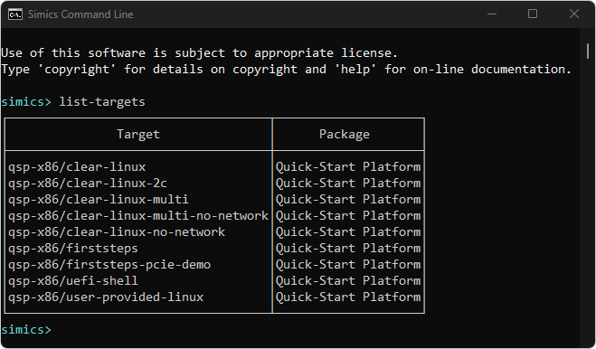
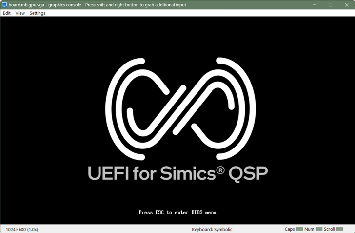
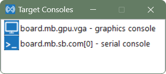
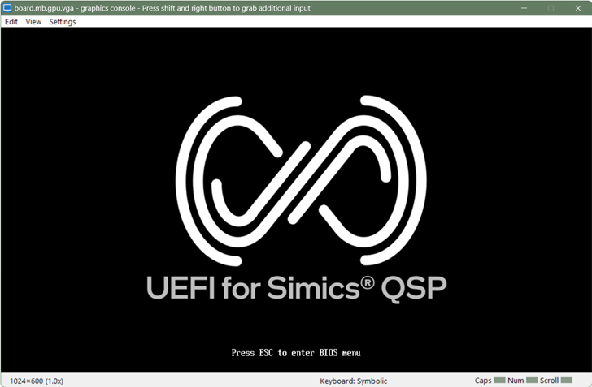
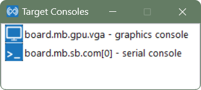
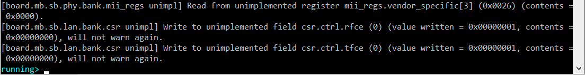
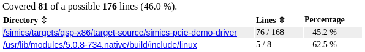
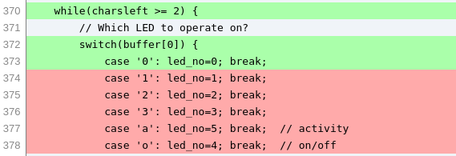
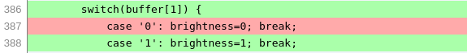
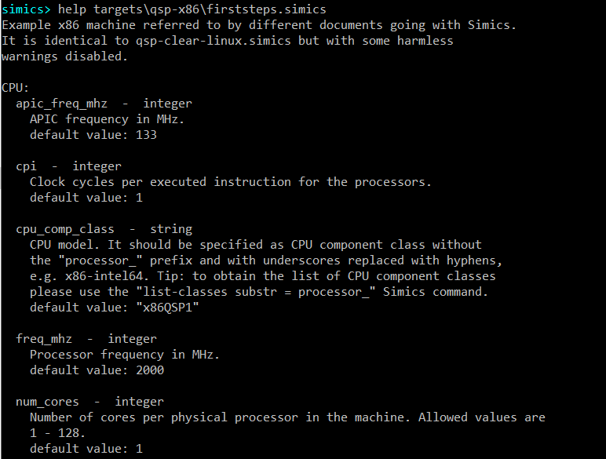

Getting Started
This document provides an introduction to the Intel Simics product and some of its features. Intel Simics is a full-system simulator mainly targeting software development and analysis. To do so, it provides hardware and software inspection, dynamic system configuration, hardware modelling tools, scripting, and a rich set of other features. Unlike many other virtual machine products, the Intel Simics simulator does not focus on being a hardware replacement, although it can be used in that way.
The introduction in this document is in the form of a few short step-by-step tutorials.
-
Scripts, screen dumps and code fragments are presented in a monospace font.
In screen dumps, user input is always presented in bold font, as in:
Welcome to the Simics prompt
simics> this is something that you should type
-
The character "/" is used to separate directories and files, for Linux. If you
are using Windows, you should read the character as "\" instead.
This section presents the terminology used throughout Intel Simics documentation.
- Intel Simics Packages are the installable packages.
The packages are can be identified by number or by name.
Noteworthy packages:
- The Intel Simics Base package (#1000), referred to as the base package,
containing the simulator.
- Other packages are referred to as add-on packages, and these
typically contains extra tools or simulated hardware targets.
- An Intel Simics installation is a set of installed Intel Simics packages.
- An Intel Simics project, referred to as the project is the workspace
where the simulator is started. The project is configured with a set associated
packages, at least the base package and possibly
some add-on packages. Besides starting the simulator, the user can create custom
start scripts and also read documentation for all packages available to the
project.
- The Simics Command Line Interface, referred to as the CLI is the main
interface to simulator for most users and is started by default. It is also
possible to launch the simulator in non-interactive, batch mode, which can be
useful when running tests. In the CLI, both Python and the Simics script
language are available, and can be used interchangeably.
- The host, or the host machine is the computer where the Intel Simics
simulator is running.
- The target machine or target system is the hardware being simulated.
To simulate a target machine, a configuration must be created.
A configuration consists of objects, object hierarchy,
properties, and connections between objects.
The default way of creating a configuration is to load a target.
For legacy reasons, it is also possible to create configurations by running
CLI or Python scripts.
When creating a configuration for a specific target machine, it is often possible
to customize properties of the target machine.
For targets, the configurable parameters are called target parameters.
(see Simics User's Guide).
A simulation session can contain multiple target machines, for example when
simulating a network.
For interaction with the target system, the simulator can show graphics
consoles and serial consoles.
Figure 1. This is an illustration of some of the key concepts
These are installation steps that should have been followed
before running any of the tutorials.
-
The Intel Simics base package (package number 1000) has been installed.
-
The QSP-x86 package (package number 2096) has been installed.
This package contains a simple x86 system with the qsp-x86/firststeps target which will be used in many examples.
-
A project directory has been created (referred to as [project] below) which
has the QSP-x86 package as an add-on package.
-
The Grml live full ISO image from the stable 2024.02 release
named grml64-full_2024.02.iso has been downloaded
and placed in the project directory.
The direct download link for this image is:
https://download.grml.org/grml64-full_2024.02.iso.
For information on how to install the simulator and create a project, see the
Installation Guide.
Some tutorials require that the QSP Clear Linux (#4094) package is
installed and available as an add-on package in the project.
If you don't have this package, reading the tutorials and referenced
manuals will still provide an overview on the subject.
This section describes how to launch and exit the simulator.
This tutorial assumes that the user has followed the installation steps in the
installation section.
The screenshots below were taken on Windows, but the Linux version of the Intel Simics simulator behaves similarly.
-
First, let’s get a command prompt on the host machine.
- On a Windows host, use one of the following alternatives:
- Use the start menu and launch Command Prompt.
- If Windows Terminal is installed, launch this and start
open an instance of the Command Prompt profile.
- Press the
Win + r keys and enter cmd in the popped-up window.
- On a Linux host, refer to the documentation of your
Linux distribution about the instructions how to get access to command
prompt.
-
Once command prompt window is available, navigate to the project directory.
-
To launch the simulator, and to get its command prompt just run the simics.bat batch file (on Linux, the simics shell script is to be used instead by entering the ./simics command).

Simics has now been launched.
-
With the CLI available, we can try running the command list-packages, which lists the packages available to the current project:

There are also launch options available to customize what happens when launching the simulator.
To quit the simulator just enter the quit command:

Simics has a couple launch options that can be listed with the --help flag:
c:\simics\project>simics.bat --help
Usage: simics [options] [<file>|<target> ...] [--preset <name|file> ...] [<param>=<value> ...]
Common options:
--batch-mode quit on error or when returning to prompt
-e, --execute <command> execute a CLI command
-h, --help print this help or list all script parameters if
used with a file. All other options are ignored
-l, --list-targets list available targets
...
These are some of more commonly used options:
-
--list-targets - list available targets
List targets available in the project and then quit.
This can also be done from CLI with the list-targets command.
c:\simics\project>simics.bat --list-targets
+------------------------------------+--------------------+
| Target | Package |
+------------------------------------+--------------------+
|qsp-x86/clear-linux |Quick-Start Platform|
|qsp-x86/clear-linux-2c |Quick-Start Platform|
|qsp-x86/clear-linux-multi |Quick-Start Platform|
|qsp-x86/clear-linux-multi-no-network|Quick-Start Platform|
|qsp-x86/clear-linux-no-network |Quick-Start Platform|
|qsp-x86/firststeps |Quick-Start Platform|
|qsp-x86/uefi-shell |Quick-Start Platform|
|qsp-x86/user-provided-linux |Quick-Start Platform|
+------------------------------------+--------------------+
-
load a target
Specify a target to load and then continue in CLI. This is equivalent of first starting
the simulator and from CLI run load-target "qsp-x86/firststeps".
c:\simics\project>simics.bat qsp-x86/firststeps
-
--quiet - launch without startup text
Use --quiet (or -q) to launch the simulator without the startup text.
c:\simics\project>simics.bat --quiet --batch-mode
simics>
-
--batch-mode - run tasks and exit
With the --batch-mode, the simulator will simply run tasks from other launch options and then exit, without starting CLI. This can be useful when starting the simulator non-interactively, typically when running tests.
The simulators exit code will be zero on success, otherwise non-zero.
c:\simics\project>simics.bat --batch-mode
Intel Simics Simulator 7 (build 7012 win64) © 2024 Intel Corporation
c:\simics\project>
Here is a more advanced example, which starts the qsp-x86/firststeps target, runs for 0.1 second and then print the current time and then quit.
The two last steps use the -e option, where a command can be specified:
c:\simics\project>simics.bat --batch-mode qsp-x86/firststeps -e "run-seconds 0.1" -e "ptime"
┌────────────────────────┬─────────┬─────────┬────────┐
│ Processor │ Steps │ Cycles │Time (s)│
├────────────────────────┼─────────┼─────────┼────────┤
│board.mb.cpu0.core[0][0]│199600000│200000000│ 0.100│
└────────────────────────┴─────────┴─────────┴────────┘
c:\simics\project>
-
--stop-on-error
If there is an error when simulation is running, stop the simulation and interrupt the current script.
If combining --stop-on-error with --batch-mode, an error (such as error log) will cause the
simulation to exit with a non-zero exit code.
To sum up, in this section we launched the simulator, tried out a command and exited the simulator.
This section focuses on some practical information related to the use of the CLI. Particularly, the following information is presented:
This section doesn’t cover all available CLI commands, but here
are some examples of what can be done with commands:
This tutorial assumes that the user has followed the installation steps in the
installation section and knows how to
launch the simulator.
As a short introduction to the functionality of the CLI:
- The CLI allows running (and combining):
- CLI commands (which also can be run from Python)
- Python code (prefixed with
@ or in python-mode)
- Host shell commands (prefixed with
! or shell)
- Most of the Intel Simics simulator interfaces can be executed as Python functions
- Each executed command is saved to a command history.
- The state of objects can be inspected by accessing attributes, commands, and interfaces.
- The CLI has variables which are prefixed with
$.
The $ prefix is used both when assigning and retrieving value (for example $var = 1 or echo $var).
- There are built-in command aliases, but it's also possible to create
custom aliases with the
alias command.
- Comments are created with
# (# this is a comment).
When launching the simulator (simics.bat on Windows or ./simics on Linux), the CLI is started automatically.
The CLI has several prompts, but here are most important.
- Simulation stopped (default)
The default prompt is simics>. This also indicates that the simulation is not running.
- Simulation running
When the simulation is running, the prompt changes to running>.
Note that most commands (such as stop) can be issued while the simulation is running.
- Python Mode
The simulator has a Python mode for using Python interactively.
When running the python-mode command, the prompt changes to simics>>>.
These are some shortcuts that may be useful:
- Control-C
A running simulation (running>) can be interrupted with Control-C, as an
alternative to typing stop.
- Arrow up
Put the previous command (from the command history) on prompt without having to re-type it.
To see older commands, press Arrow up again.
- Control-R
Search the command history by first pressing Control-R and then
type a substring to search for in the command history. Press Control R again
to see the next matching.
- Tab
The Tab key is used for command line completion.
To simplify interactive use, the CLI implements command line completion, also known as tab completion. The CLI can complete commands, arguments, file names, and some other entities. Let’s see how command line completion works for the load-target command:
-
Launch the simulator.
-
Use tab-completion to complete the command load-target by typing only load-t and
then press tab:
simics> load-t # press tab once to complete command
simics> load-target
-
To get further with command line completion, press the tab key twice. The CLI
will print the list of parameters and flags which can be passed
to the load-target command:
simics> load-target # press tab twice to get arguments
namespace = preset = preset_yml = presets = target =
simics>
Please note that we had to press the tab key twice. It is because the command completion system could not unambiguously complete the command after the tab key was pressed once. After the tab key is pressed again, the command completion system shows all possible completions.
-
Let’s proceed with our current command line entry and expand arguments that begin
with the letter t. Enter t followed by the tab key and observe that the target
argument appears:
simics> load-target t # press tab to expand the 'target' argument
simics> load-target target =
-
We would like to load the target qsp-x86/firststeps. The command line completion
can help with this. With the current command entry, type q and then tab once to expand
all targets that begin with q.
simics> load-target target = q # press tab once to complete qsp-x86
simics> load-target target = "qsp-x86/
-
Now type f and then tab to expand the target named qsp-x86/firststeps:
simics> load-target target = "qsp-x86/f # press tab to complete target name
simics> load-target target = "qsp-x86/firststeps"
-
We now have the complete command for loading the qsp-x86/firststeps target.
Pressing enter to load this target machine:
simics> load-target target = "qsp-x86/firststeps"
"firststeps"
simics>
We have now used command line completion to load the qsp/firststeps target.
The simulator documentation can be accessed in the CLI with the help command. The help command provides access to the documentation for:
- commands
- scripts
- objects
- classes
- modules
- attributes
- API functions
To try the command, enter the following command to see the documentation for the load-target command:
simics> help load-target
Command load-target
Synopsis
load-target "target" ["namespace"] ["preset"|presets|"preset_yml"]
...
To get the documentation for any command just run the help command specifying the command you are interested in:
simics> help <command-of-interest>
More information on the help command can be obtained by reading the documentation for the help command itself:
simics> help help
Command help
Alias
h, man
Synopsis
help ["topic"]
...
The help-search command allows to search the documentation for a particular string. Here is a sample usage of the help-search command:
simics> help-search python
The text 'python' appears in the documentation
for the following items:
Command %
Command <bp-manager.log>.break
Command <bp-manager.log>.run-until
Command <bp-manager.log>.trace
...
More information about the CLI can be found in
Simics User's Guide,
section The Command Line Interface.
This section describes how to:
- create a target machine
- run and stop the simulation
This tutorial assumes that the user has followed the installation steps in the
installation section.
The screenshots below were taken on Windows, but the Linux version of the Intel Simics simulator behaves similarly.
While this section deals with targets, there is also a legacy way of creating target machines using scripts described here.
Let’s create a target machine by loading the qsp-x86/firststeps target.
-
Launch the simulator.
-
Before loading the qsp-x86/firststeps target, let us first verify that this target is available in our project.
To list available targets, run list-targets and verify that you see the target qsp-x86/firststeps in the listing:

It is also possible to list targets without starting an interactive session,
by starting the simulator with the -l argument.

If you don't see qsp-x86/firststeps, you need to make sure that you have
installed the QSP-x86 (#2096), and that it is available in the project as an
add-on package. Read more about installing the simulator in the
installation section.
-
Now that we have verified that the qsp-x86/firststeps target is available, we will load it:
simics> load-target target = "qsp-x86/firststeps"
"firststeps"
-
A few new windows have popped up after a target machine has been created.
Initially the consoles are blank, but the below screenshots are taken from a later time in the simulation to show something more interesting.
- board.mb.sb.com[0] - serial console - Figure 2
a text terminal window connected to a serial port of the target machine
- board.mb.gpu.vga - graphics console - Figure 3
a graphical display window connected to a graphical device of the target machine
- Target Consoles - Figure 4
a utility window which allows showing or hiding the target consoles
 Figure 2. A text terminal window connected to a serial port of the target machine

Figure 3. A graphical display window connected to a graphical device of the target machine

Figure 4. A target console control window:
Figure 2. A text terminal window connected to a serial port of the target machine

Figure 3. A graphical display window connected to a graphical device of the target machine

Figure 4. A target console control window:
One of the ways to start the simulation of the newly created target machine is to use the run command.
-
Start the simulation with the run command:
simics> run
running>
-
There may be messages printed in the CLI window:

These messages are coming from models which, as messages report, may not simulate certain features. Many target models use a pragmatic approach and don’t simulate features which are not relevant for simulated machines, for example, thermal control. So, the messages are usually harmless.
-
As simulation progresses, the target machine will boot Linux operating system (this can take up to several minutes):

-
The login to the system is done automatically. After the login, one can interact with the operating system running on the target machine by running commands at the text console window. Here is a sample session when pwd and uname -a Linux commands were executed on the simulated machine after the login:

-
One can stop simulation, thus pausing a target machine, by running the stop command:
running> stop
simics>
-
The target machine is paused now. But it can be resumed by entering the run command:
simics> run
running>
To see other ways of starting and stopping the simulator, run help with
the Execution category:
simics> help Execution
...
run start execution
run-cycles start execution
run-seconds execute for seconds
...
For further information, see the help command section.
This section contains some examples of how to inspect processors and devices, when running the qsp-x86/firststeps target machine.
-
Launch the simulator with the qsp-x86/firststeps target.
$ ./simics qsp-x86/firststeps
-
To inspect the target machine, use the list-objects command.
simics> list-objects -local
┌───────────────┬───────────────────┐
│ Object │ Component Class │
├───────────────┼───────────────────┤
│board │<chassis_qsp_x86> │
│ethernet_switch│<ethernet_switch> │
│service_node │<service_node_comp>│
└───────────────┴───────────────────┘
┌───────────────────┬───────────────┐
│ Object │ Class │
├───────────────────┼───────────────┤
│bp │<bp-manager> │
│default_sync_domain│<sync_domain> │
│params │<script-params>│
│prefs │<preferences> │
│sim │<sim> │
└───────────────────┴───────────────┘
-
Here we see that we have a few special objects, like the breakpoint manager and the sim object, we have the network related objects, and at the top we have the actual machine. We can look at the objects inside it:
simics> list-objects namespace = board -local
┌────────────────┬───────────────────────┐
│ Object │ Component Class │
├────────────────┼───────────────────────┤
│board.console │<gfx_console_comp> │
│board.disk0 │<sata_disk_comp> │
│board.disk1 │<sata_disk_comp> │
│board.mb │<motherboard_x58_ich10>│
│board.serconsole│<txt_console_comp> │
│board.usb_disk │<usb_disk_comp> │
└────────────────┴───────────────────────┘
┌──────────────────┬──────────────┐
│ Object │ Class │
├──────────────────┼──────────────┤
│board.cell │<cell> │
│board.cell_context│<context> │
│board.cell_rec0 │<recorder> │
│board.software │<os_awareness>│
└──────────────────┴──────────────┘
-
To see the objects associated with the processor, we can again use the list-objects command. The -tree option displays the objects in a hierarchical fashion.
simics> list-objects -show-port-objects namespace = board.mb.cpu0 -tree
┐
├ apic[0] ┐
│ └ [0] ┐
│ ├ bank ┐
│ │ └ apic_regs
│ └ port ┐
│ └ freq_listener
├ core[0] ┐
│ └ [0] ┐
│ ├ probes ┐
│ │ └ uncore
│ └ vtime ┐
│ ├ cycles
│ └ ps
├ mem[0] ┐
│ └ [0]
├ socket
└ tlb[0] ┐
└ [0]
-
To list all processors, use the list-processors command.
Note the * to the right of board.mb.cpu0.core[0][0] and the last line * = selected CPU.
In this system, there is only one processor, but in systems with multiple processors,
the command pselect can be used to get the current processor or select
another processor.
More on this here.
simics> list-processors
┌────────────────────────┬─┬─────────┬────────┐
│ CPU Name │ │CPU Class│ Freq │
├────────────────────────┼─┼─────────┼────────┤
│board.mb.cpu0.core[0][0]│*│x86QSP1 │2.00 GHz│
└────────────────────────┴─┴─────────┴────────┘
* = selected CPU
-
The list-processors command can show information about the state of each processor core, to help diagnose the current state of the system. There are multiple switches available, use help or tab-completion to see the available options. The -disassemble option is particularly interesting, as it often indicates processor modes like wait states.
simics> list-processors -disassemble
┌────────────────────────┬─┬─────────┬────────┬────────────────────────┐
│ CPU Name │ │CPU Class│ Freq │ Disassembly │
├────────────────────────┼─┼─────────┼────────┼────────────────────────┤
│board.mb.cpu0.core[0][0]│*│x86QSP1 │2.00 GHz│cs:0x000000000000fff0 p:│
│ │ │ │ │0x0fffffff0 nop │
└────────────────────────┴─┴─────────┴────────┴────────────────────────┘
-
The current processor (marked with a * in list-processors)
is used by some global commands, for example in print-processor-registers,
as the processor the command operates to.
To access the current processor, use the cpu object alias.
The cpu object alias can be used both to get the current processor, and
to tab-expand commands, child objects and attributes of the current processor.
simics> cpu
"board.mb.cpu0.core[0][0]"
simics> cpu # press tab twice to expand everything starting with cpu
cpu-> cpu-pages-dump cpu-switch-time cpu. cpu.vtime.
simics> cpu. # press tab twice to expand child objects and commands
cpu.aprof-views cpu.instruction-fetch-mode
cpu.bp-break-control-register cpu.instrumentation-move
cpu.bp-break-cycle cpu.instrumentation-order
...
simics> cpu-> # press tab twice to expand attributes
cpu->a20_inhibited
cpu->a20mask
cpu->access_count
cpu->access_type_name
cpu->activity_state
...
-
To change the current processor, use the command pselect. Without argument this shows
the current processor, just like cpu.
simics> pselect "board.mb.cpu0.core[0][0]"
simics> pselect
"board.mb.cpu0.core[0][0]"
-
We can inspect the registers and current execution mode of a processor by using the print-processor-registers command.
simics> board.mb.cpu0.core[0][0].print-processor-registers
16-bit legacy real mode
rax = 0x0000000000000000 r8 = 0x0000000000000000
rcx = 0x0000000000000000 r9 = 0x0000000000000000
rdx = 0x00000000000106a1 r10 = 0x0000000000000000
rbx = 0x0000000000000000 r11 = 0x0000000000000000
rsp = 0x0000000000000000 r12 = 0x0000000000000000
rbp = 0x0000000000000000 r13 = 0x0000000000000000
rsi = 0x0000000000000000 r14 = 0x0000000000000000
rdi = 0x0000000000000000 r15 = 0x0000000000000000
rip = 0x000000000000fff0
eflags = 0 0 0 0 0 0 0 0 0 0 0 0 0 0 0 0 0 0 0 0 1 0 = 0x00000002
I V V A V R - N I I O D I T S Z - A - P - C
D I I C M F T O O F F F F F F F F F
P F P P
L L
-
Another way to read registers of the current processor (see here)
would be to run the global command print-processor-registers.
simics> print-processor-registers
-
Individual registers are also typically accessible. Here we also use the output-radix command that specifies the base when numbers are displayed.
simics> output-radix 16
simics> %rdx
0x106a1
-
We can also inspect devices, their register banks, and individual registers. Information about their registers can be displayed using the print-device-regs command. For example, we can look at the DMI device. First, we locate it in the system.
simics> list-classes -l substr = dmi -show-port-classes
The following classes have been registered:
┌───────────────────┬──────────────────────────────────────────────────┐
│ Class │ Short description │
├───────────────────┼──────────────────────────────────────────────────┤
│x58-dmi │Intel® X58 DMI unit │
│x58-dmi.HRESET │ │
│x58-dmi.io_regs │ │
│x58-dmi.msg │legacy PCI INTx message to pci_interrupt converter│
│x58-dmi.pcie_config│ │
│x58-dmi.phy │ │
└───────────────────┴──────────────────────────────────────────────────┘
simics> list-objects class = x58-dmi -all
┌──────────────────┬─────────┐
│ Object │ Class │
├──────────────────┼─────────┤
│board.mb.nb.bridge│<x58-dmi>│
└──────────────────┴─────────┘
-
Now we can inspect the banks and device registers.
simics> print-device-regs bank = board.mb.nb.bridge
Bank: io_regs
Offset Name Size Value | Offset Name Size Value
------------------------------------+---------------------------------
0xcf8 config_address 4 0x0 | 0xcfc config_data 4 0x0
Bank: pcie_config
Offset Name Size Value
------------------------------------------
0x0 vendor_id 2 0x8086
0x2 device_id 2 0x3400
0x4 command 2 0x0
0x6 status 2 0x10
0x8 revision_id 1 0x13
0x9 class_code 3 0x80000
0xc cache_line_size 1 0x0
0xd latency_timer 1 0x0
0xe header_type 1 0x0
0xf bist 1 0x0
0x2c subsystem_vendor_id 2 0x8086
0x2e subsystem_id 2 0x0
0x34 capabilities_ptr 1 0x0
0x3c interrupt_line 1 0x0
0x3d interrupt_pin 1 0x0
-
We can specify a pattern to only display certain registers.
simics> print-device-regs bank = board.mb.nb.bridge pattern = vendor_id
Bank: pcie_config
Offset Name Size Value
-------------------------------
0x0 vendor_id 2 0x8086
-
To obtain more information about a particular register, we can use the print-device-reg-info command.
simics> print-device-reg-info register = board.mb.nb.bridge.bank.pcie_config.vendor_id
Vendor ID [board.mb.nb.bridge.bank.pcie_config.vendor_id]
Bits : 0x10
Offset : 0x0
Value : 0x8086
----------
Bit Fields
vendor_id @ [15:0] : 1000000010000110
When retrieving a register value for inspection or use in further code, it is better to use one of the commands designed for that purpose:
get-device-regget-device-offsetread-device-regread-device-offsetset-device-regset-device-offsetwrite-device-regwrite-device-offset
The command names have the following meanings:
-
Operation type:
- get = do inquiry reads and should not have side-effects on the state of the register
- set = do inquiry writes, change the register contents but do not trigger side effects
- read and write = do normal memory operations that have side effects
-
Target specification:
- reg = specify the register by name (name.of.device.bank.registername).
- offset = specify name.of.device.bank, and offset, and size.
simics> get-device-reg board.mb.nb.bridge.bank.pcie_config.device_id
0x3400
simics> get-device-offset board.mb.nb.bridge.bank.pcie_config offset = 2 size = 2
0x3400
To sum up, we have shown a few simple ways in which the hardware can be inspected. One important point is that the inspection is non-intrusive, any software running on the target machine cannot notice anything of our inspection.
To access the documentation run the documentation.bat (documentation on Linux) script in your project. The script will index all the documents for the packages associated with your project, and then it will open the documentation in your web browser.
The CLI provides a few commands that assist in exploring large simulated systems, and for exploring the CLI.
Such a command is help. Use it to receive help about almost anything in the simulator that has a name, in particular the commands you have seen in this document, and which you will see in the rest of the Intel Simics documentation.
Another important command is help-search, also known as apropos. It can be used to search the reference documentation for a particular text string.
Both help and apropos limit their search to documentation about everything that is currently loaded in the simulator. This means it is usually best to run them after you have loaded the target system you want to explore.
A simulation in built up by objects. Objects can provide namespaced commands, that is, commands on the format <object-name>.<command-name>. Different kinds of objects provides different namespaced commands. The namespaced command is either registered on an interface or on a class.
Sometimes you know of an interesting namespaced command you want to use, for example the input command, but you don't know which objects provide the command. To find those objects, first use the apropos command to find which kinds of objects that provide the command:
simics> apropos input
The text 'input' appears in the documentation
for the following items:
Command <bp-manager.con-string>.wait-then-write
Command <graphcon>.grab-setup
Command <graphcon>.input
Command <graphcon>.input-file
Command <os_awareness>.find
Command <recorder>.playback-start
Command <recorder>.recorder-start
Command <recorder>.recorder-stop
Command <textcon>.input
...
As an alternative to apropos, which searches all documentation for loaded modules, we can limit the result to only commands by using list-commands:
simics> list-commands substr = input
┌─────────────────────┬───────────────────────────┐
│ Command │ Short Description │
├─────────────────────┼───────────────────────────┤
│<graphcon>.input │send string to a console │
│<graphcon>.input-file│input a file into a console│
│<textcon>.input │send input to a console │
│<textcon>.input-file │input a file into a console│
└─────────────────────┴───────────────────────────┘
The input command is provided by graphcon and textcon.
Let's focus on textcon.
First we determine if textcon is a interface or a class.
simics> list-interfaces substr = textcon
No match for substr 'textcon'
simics> list-classes substr = textcon
The following classes are available:
┌───────┬─────────────────┐
│ Class │Short description│
├───────┼─────────────────┤
│textcon│text console │
└───────┴─────────────────┘
The textcon clearly references a class.
Now we can use the list-objects command to find all objects of the textcon class.
simics> list-objects class = textcon
┌────────────────────┬─────────┐
│ Object │ Class │
├────────────────────┼─────────┤
│board.serconsole.con│<textcon>│
└────────────────────┴─────────┘
Evidently, the only textcon object in the target system is board.serconsole.con.
From the result of apropos and list-objects we now know that there is a command
board.serconsole.con.input:
simics> help board.serconsole.con.input
Command <textcon>.input
Synopsis
<textcon>.input "string" [-e]
Description
Send string to the text console.
...
The list-objects command, and many other commands can handle the namespace hierarchy of objects.
For example, if we know that we were looking for a textcon class hierarchically under board, we would use the namespace argument.
simics> list-objects namespace = board class = textcon
┌────────────────────┬─────────┐
│ Object │ Class │
├────────────────────┼─────────┤
│board.serconsole.con│<textcon>│
└────────────────────┴─────────┘
These simple commands go a long way when you want to explore the Intel Simics simulator.
These tutorials show how to perform common tasks in the simulator. In the
tutorials We use the example target system qsp-x86/firststeps, which is a
simple x86 based system running Grml Linux.
In the running the simulator section, we loaded a target which created a configuration with default settings.
It is also possible to customize the properties of target machines by setting target parameters.
In this section we demonstrate how to:
- discover target parameters for a target
- set target parameters when loading a target
This section describes how to discover target parameters
available for a specific target, in this case the qsp-x86/firststeps target.
These are some of possible methods to list target parameters:
To discover available parameters via command line completion, press the tab key twice after entering load-target target = qsp-x86/firststeps:
simics> load-target target = qsp-x86/firststeps <TAB><TAB>
machine:hardware:apic_bus:class =
machine:hardware:consoles:con0:bg_color =
machine:hardware:consoles:con0:create =
machine:hardware:consoles:con0:fg_color =
machine:hardware:consoles:con0:show =
This will list the available target parameters, which is useful for overview and as a convenience when setting parameters.
Another way to list target parameters, and also to show type, description and default value, is to use the help command with target: as prefix:
simics> help "target:qsp-x86/firststeps"
┌───────────────────────────────┬────┬──────────────────────────────┬──────────────────────────────┐
│Name │Type│Description │Default │
├───────────────────────────────┼────┼──────────────────────────────┼──────────────────────────────┤
│machine:hardware:memory_megs │int │Amount of RAM in the machine, │8192 │
│ │ │in MiB. The highest supported │ │
│ │ │value is 65536 (64 GiB). More │ │
│ │ │than 64 GiB is not supported │ │
│ │ │since the x86QSP1 processor is│ │
│ │ │limited to a 36-bit physical │ │
│ │ │address space. │ │
...
The object params has a help command, which can provide information on targets.
simics> params.help target = "qsp-x86/firststeps"
┌───────────────────────────────┬────┬──────────────────────────────┬──────────────────────────────┐
│Name │Type│Description │Default │
├───────────────────────────────┼────┼──────────────────────────────┼──────────────────────────────┤
│machine:hardware:memory_megs │int │Amount of RAM in the machine, │8192 │
│ │ │in MiB. The highest supported │ │
│ │ │value is 65536 (64 GiB). More │ │
│ │ │than 64 GiB is not supported │ │
│ │ │since the x86QSP1 processor is│ │
│ │ │limited to a 36-bit physical │ │
│ │ │address space. │ │
To see a complete description of params.help, type help params.help.
Let’s create a target machine with 4 cores per physical processor by setting the num_cores parameter to 4. To do that please run the following command:
simics> load-target "qsp-x86/firststeps" machine:hardware:processor:num_cores = 4
To verify that the target indeed has 4 cores, run the list-processors command:
simics> list-processors
┌────────────────────────┬─┬─────────┬────────┐
│ CPU Name │ │CPU Class│ Freq │
├────────────────────────┼─┼─────────┼────────┤
│board.mb.cpu0.core[0][0]│*│x86QSP1 │2.00 GHz│
│board.mb.cpu0.core[1][0]│ │x86QSP1 │2.00 GHz│
│board.mb.cpu0.core[2][0]│ │x86QSP1 │2.00 GHz│
│board.mb.cpu0.core[3][0]│ │x86QSP1 │2.00 GHz│
└────────────────────────┴─┴─────────┴────────┘
It is also possible to create a file with customized values of target parameters in a preset file.
This is described in Simics User's Guide.
Intel Simics hardware models generally output log messages for various kinds of events. The simulator's log system offers a very powerful system for configuring which log messages to see - from which objects, at which level. The result is often large volumes of output. That output can be configured and sent to files for later inspection, as well as used in scripts to stop the simulation, or take other actions when a log message appears.
Here we will show some logging examples when running the qsp-x86/firststeps target machine.
-
Launch the simulator with the qsp-x86/firststeps target.
$ ./simics qsp-x86/firststeps
-
The starting point is the large set of options available to the log-setup command. To check the current settings, just issue log-setup alone:
simics> log-setup
Time stamp : disabled
Picoseconds : disabled
Real time : disabled
Disassembly : disabled
Log to console : enabled
Include group : disabled
Include level : disabled
Log file : disabled
-
All objects in the Intel Simics simulator, and all log messages, have a log level. The default log level is 1, which is supposed to show important information. Log level 2 to 4 add progressively more information. To configure and inspect the log level of an object, use the log-level object command. This will show or configure the log level for the object.
simics> log-level board.mb.nb.bridge 2
[board.mb.nb.bridge] Changing log level: 1 -> 2
simics> log-level board.mb.nb.bridge
Current log levels:
Lvl Object | Lvl Object
-----------------------------------------+------------------------------------
2 board.mb.nb.bridge | 2 board.mb.nb.bridge.port
2 board.mb.nb.bridge.bank | 2 board.mb.nb.bridge.port.HRESET
2 board.mb.nb.bridge.bank.io_regs | 2 board.mb.nb.bridge.port.msg
2 board.mb.nb.bridge.bank.pcie_config | 2 board.mb.nb.bridge.port.phy
-
The log messages that are displayed are those which have a level less than or equal to the ones configured on the object.
Each log message also has a log type, and similarly like log levels, we can configure which log types to display on each object:
simics> log-type board.mb.nb.bridge info
board.mb.nb.bridge:
enabled log types: "info"
disabled log types: "error" "spec-viol" "unimpl" "critical" "warning"
board.mb.nb.bridge.bank:
enabled log types: "info"
disabled log types: "error" "spec-viol" "unimpl" "critical" "warning"
board.mb.nb.bridge.bank.io_regs:
enabled log types: "info"
disabled log types: "error" "spec-viol" "unimpl" "critical" "warning"
board.mb.nb.bridge.bank.pcie_config:
enabled log types: "info"
disabled log types: "error" "spec-viol" "unimpl" "critical" "warning"
board.mb.nb.bridge.port:
enabled log types: "info"
disabled log types: "error" "spec-viol" "unimpl" "critical" "warning"
board.mb.nb.bridge.port.HRESET:
enabled log types: "info"
disabled log types: "error" "spec-viol" "unimpl" "critical" "warning"
board.mb.nb.bridge.port.msg:
enabled log types: "info"
disabled log types: "error" "spec-viol" "unimpl" "critical" "warning"
board.mb.nb.bridge.port.phy:
enabled log types: "info"
disabled log types: "error" "spec-viol" "unimpl" "critical" "warning"
-
When we run the simulation, log messages will appear based on our filtering.
simics> run 1000
[board.mb.nb.bridge.bank.io_regs info] PCIe write 0xe0000001 to ff:0.1 offset 0x50, 4 bytes
-
It is also possible to set breakpoints on log messages. These can similarly be filtered on object, log type etc.
To see when in virtual time a log message is printed, use log-setup -time-stamp. This will print the processor that provided the virtual time for the message, its current instruction pointer or program counter (address of the instruction active when the log was printed), and its current cycle count. To turn it off, use -no-time-stamp. The -pico-seconds and -real-time are similar, but prints picosecond resolution timestamps and real time, respectively.
simics> log-setup -time-stamp
simics> bp.log.break object = board.mb.nb.bridge.bank.io_regs type = info
Breakpoint 3: Break on 'info' log messages from board.mb.nb.bridge.bank.io_regs hierarchy
simics> run
[board.mb.nb.bridge.bank.io_regs info] {board.mb.cpu0.core[0][0] 0xfffecbf7 136713}
PCI read 0x0 from bus 0, device 31, function 0, register 68 (0x44, 1 bytes), PCIE address = 0xf8044
[board.mb.nb.bridge.bank.io_regs] Breakpoint 1: board.mb.nb.bridge.bank.io_regs log message of type info
To send all log outputs to a file, use log-setup logfile=<filename>. To overwrite an existing file, the -overwrite flag must be given. To stop output, use the command log-setup -no-log-file.
Tracing is a way to observe what is going on during the simulation. The Intel Simics simulator has a Breakpoint Manager that includes functionality for tracing various types of events. This means that messages (in fact, log messages) are printed when an event of the specified occurs. Such a sequence of messages is what is here is known as a trace.
Here we will show some tracing examples.
-
Launch the simulator with the qsp-x86/firststeps target.
$ ./simics qsp-x86/firststeps
-
First, we can try tracing control register updates. By default, it traces updates on the primary processor (in this case there is only one).
simics> bp.control_register.trace -all
3
-
Since traces are handled as breakpoints, the trace properties can be observed with the bp.list command.
From bp.list we can see on the last line that we got id 3, which will be used later when deleting the trace.
simics> bp.list
┌──┬───────────────────────────────────┬───────┬───────┬────────────┬─────────┐
│ID│ Description │Enabled│Oneshot│Ignore count│Hit count│
├──┼───────────────────────────────────┼───────┼───────┼────────────┼─────────┤
│ 1│Clock board.mb.cpu0.core[0][0] │ true │ false │ 0│ 0│
│ │break at time 5.0 │ │ │ │ │
├──┼───────────────────────────────────┼───────┼───────┼────────────┼─────────┤
│ 2│Console 'board.serconsole.con' │ true │ false │ 0│ 0│
│ │break on "root.*@grml.*#.* " │ │ │ │ │
│ │(regexp) │ │ │ │ │
├──┼───────────────────────────────────┼───────┼───────┼────────────┼─────────┤
│ 3│board.mb.cpu0.core[0][0] break on │ true │ false │ 0│ 0│
│ │R/W of any register │ │ │ │ │
└──┴───────────────────────────────────┴───────┴───────┴────────────┴─────────┘
-
We run the simulation and observe the trace output where we can see that registers are read and written.
simics> run 1000
[bp.control_register trace] [trace:3] board.mb.cpu0.core[0][0] cr0 <- 0x23
[bp.control_register trace] [trace:3] board.mb.cpu0.core[0][0] cr4 <- 0x640
[bp.control_register trace] [trace:3] board.mb.cpu0.core[0][0] read of cr4
[bp.control_register trace] [trace:3] board.mb.cpu0.core[0][0] cr4 <- 0x640
-
The trace output are log messages and can be controlled with the log-setup command. For example, each message can be prepended with a time-stamp, indicating the processor, program counter and the cycle count at the point where the event occurred.
simics> log-setup -time-stamp
simics> c 17450
[bp.control_register trace] {board.mb.cpu0.core[0][0] 0xffff95f3 398353} [trace:3] board.mb.cpu0.core[0][0] read of IA32_APIC_BASE
-
Here is another example where we trace memory accesses. First, we remove the previous trace.
simics> bp.delete id = 3
-
Now we turn on tracing of all memory read accesses to a specific region. Again, by default this will trace accesses on the primary processor and hence these are virtual addresses.
simics> bp.memory.trace address = 0 length = 100000 -r
-
We run the simulation again and notice a memory access.
simics> run 386_985_232 cycles
[bp.memory trace] {board.mb.cpu0.core[0][0] 0x60837d57 387383681} [trace:5] board.cell_context 'r' access to v:0x10 len=4
Several other types of events can also be traced, such as target console string output and hits at specific source code lines.
The Intel Simics simulator allows saving the simulation state to disk, thus, the state of all target machines for later use. We call a saved state a checkpoint. Other simulators may refer to a saved state as a snapshot. In Simics a snapshot is also a saved state, but this only exists in-memory during a simulator session.
In this section:
- how to create a checkpoint
- how to restore the simulation state from a checkpoint
- links to further information about checkpoints
Creating a checkpoint:
-
launch the simulator and load the qsp-x86/firststeps target:
simics> load-target qsp-x86/firststeps
-
run the simulation until Linux is booted:
simics> run
-
stop simulation:
running> stop
simics>
-
create a checkpoint by running the write-configuration CLI command and specifying a destination where to store a checkpoint:
simics> write-configuration target-booted.ckpt
-
quit the simulator:
simics> quit
The target-booted.ckpt directory created on step 5 above contains saved simulation state.
Restoring from a checkpoint:
-
launch the simulator
-
restore the checkpoint state with the following command:
simics> read-configuration target-booted.ckpt
-
the simulation state from the target-booted.ckpt checkpoint has now been restored. We can see a text terminal window of the target machine with Linux prompt. We can resume simulation with the run command:
simics> run
running>
Useful information about checkpoints can be found in the documentation of the write-configuration and read-configuration commands (the documentation can be obtained from the CLI by running the help command like this: help write-configuration).
In addition to checkpoints, the Intel Simics simulator can save the state of simulation in memory. We refer to such saved states as snapshots. Snapshots are not preserved after one quits the simulator. Once snapshots have been taken it is possible to jump between them.
In this section:
- how to take snapshots
- how to jump between snapshots
Creation and use of snapshots:
-
load the qsp-x86/firststeps target using the load-target command:
simics> load-target qsp-x86/firststeps
-
start the created target machine:
simics> run
running>
-
wait until Linux has booted. When Linux has booted, a text terminal window connected to a serial port of the target machine will look like this:
-
stop simulation:
running> stop
simics>
-
take a snapshot by running the take-snapshot command and specifying a name for the snapshot:
simics> take-snapshot booted
where "booted" is a name we picked for a snapshot.
-
resume simulation:
simics> run
running>
-
do some changes to the target machine. As an example of such changes, the screenshot below shows how to identify where the mesg utility is located, delete it and check that it cannot be found after it has been deleted:
-
stop simulation:
running> stop
simics>
-
restore the simulation state to the one which was saved on step 4:
simics> restore-snapshot booted
where restore-snapshots is a command to restore the simulation state from a snapshot, and "booted" is the name which we gave to the bookmark created on the step 4.
-
the text terminal of the simulated machine looks now like it did before we deleted mesg utility on step 6:
What will happen now if we will run the simulation after we restored the state from the snapshot? By default, the simulation will just resume from the state of the snapshot. The input and modifications done in step 7 will not occur.
-
resume simulation by executing the run command and observe on the text terminal windows of the target machine how nothing happens, the console output will remain as after booted in step 3.
-
stop simulation by executing the stop command.
In order to repeat input one can use a recorder to record input and the replay it after loading a snapshot:
-
restore the simulation state "booted" again:
simics> restore-snapshot booted
-
start recording to a file using the start-recording command:
simics> start-recording file = "myrecording.rec"
Recording of asynchronous input started
-
resume simulation with the run command:
simics> run
running>
-
enter some input to the terminal window, in this case the same input as in the earlier example, step 7:
-
stop the simulation and then stop the recording with the stop-recording command:
running> stop
simics> stop-recording
Recording of asynchronous input stopped
-
restore the simulation state "booted" again:
simics> restore-snapshot booted
-
replay the recording:
simics> start-playback file = "myrecording.rec"
Playback of recorded async input started
simics> run
running>
The terminal input will be replayed:
simics> stop
running>
We can see that the same inputs were replayed with the same output as a result.
The existing snapshots can be listed using the list-snapshots command:
simics> list-snapshots
When a snapshot is no longer needed it can be deleted using the delete-snapshot command:
simics> delete-snapshot booted
In addition to interactive use, the Intel Simics simulator can also run scripts with CLI commands and/or Python code. This section provides some examples on how to write custom scripts and run them.
When the situation occurs that the same commands have to be repeated, it is recommended to instead put these in a script.
Here we describe how to create and run a simple script.
We will create a script in the project directory and run it.
Open an editor, and copy/paste/save the below lines to first.simics in the project folder.
echo "Script is running"
This can be done in two ways:
-
Launch the simulator with the script (using -q to get less output).
With --batch-mode launch option, the script will simulator will exit after running the script (example on Linux).
project>./simics -q --batch-mode first.simics
Script is running
project>
-
From simulator CLI:
simics> run-script first.simics
Script is running
Let's say we repeatedly input the following lines on the CLI:
$target = "qsp-x86/firststeps"
$run_time = 0.2
echo "Load the target " + $target + " and run " + $run_time + " seconds"
load-target "qsp-x86/firststeps"
run-seconds $run_time
ptime
To speed up the turnaround time, we can put these line in a script, and run this script.
-
Create the script run-target.simics with the above commands, in the project folder.
-
Run the script run-target.simics and verify that the output from the last command, ptime is:
Load the target qsp-x86/firststeps and run 0.2 seconds
┌────────────────────────┬─────────┬─────────┬────────┐
│ Processor │ Steps │ Cycles │Time (s)│
├────────────────────────┼─────────┼─────────┼────────┤
│board.mb.cpu0.core[0][0]│387346147│400000000│ 0.200│
└────────────────────────┴─────────┴─────────┴────────┘
This is an example of a Python script which does essentially the same thing as CLI Script example, and shows different ways of calling CLI commands from Python.
-
Create the script run-target.py with the below contents:
import cli
import simics
target = "qsp-x86/firststeps"
run_time = 0.2
cli.run_command(f'echo "Load the target {target} and run {run_time} seconds"')
simics.SIM_load_target(target, None, [], [])
cli.global_cmds.run_seconds(seconds=run_time)
cpu = cli.current_cpu_obj() # get the current CPU object
print(cpu.cli_cmds.ptime())
The target is loaded by calling the simulator API function simics.SIM_load_target which corresponds to what is done with the load-target command.
-
Run the script run-target.py and verify that the output is:
Load the target qsp-x86/firststeps and run 0.2 seconds
[[<the x86QSP1 'board.mb.cpu0.core[0][0]'>, 387346147, 400000000, 0.2]]
Note that it's the return value of ptime is printed.
In run-target.py two ways of running CLI commands from Python are demonstrated:
The function arguments are documented with the Python help system.
Note that the function arguments can be different from the command arguments.
For the full command documentation, use the CLI help command.
Examples of viewing help text for the board.log-group command:
-
Get the full command documentation.
simics> help board.log-group
Command <conf_object>.log-group
Synopsis
<conf_object>.log-group [-enable|-disable] ["log-group"] [-r]
log-group [object] [-enable|-disable] ["log-group"] [-r]
Description
Enable (-enable) or disable (-disable) a log-group, or show whether it is
...
-
Get the Python function arguments.
simics> @help(conf.board.cli_cmds.log_group)
Help on function log_group in module cli_impl:
log_group(*args, **kw)
Function to run the '<conf_object>.log-group' command.
No positional parameters are accepted.
The following keyword-only parameter(s) are accepted:
- _enable: optional, flag, default value - (flag_t, 0, None)
- _disable: optional, flag, default value - (flag_t, 0, None)
- log_group: optional, string, default value - None
- _r: optional, flag, default value - False...
Note in the above example:
- The object
board is accessed from Python using conf.board.
- The CLI command name
log-group has the corresponding function named log_group (with underscore).
Here follows another example script, which demonstrates scripting that combines CLI commands and Python:
-
Create the script mix.simics with the below contents:
@import cli
@import conf
@import simics
@def log_cli_var(name):
print(f'Log the value of "{name}" from Python')
contents = cli.simenv[name]
simics.SIM_log_info(1, conf.sim, 0, f'{name} = {contents}')
$a = 1
@log_cli_var("a")
@b = cli.simenv.a + 1
expect ($a + 1) `b`
In the script the following is demonstrated:
- Calling Python code using
@.
- Access CLI variables from Python using
cli.simenv.
- Access Python variables from CLI using backticks (
`b`).
- Using the simulator object
sim from Python by prepending conf. to
the object name (the sim object is always present).
- Calling of the simulator API function
simics.SIM_log_info.
-
Run the script mix.simics and verify that the output is:
Log the value of "a" from Python
[sim info] a = 1
For further information about CLI, see the Simics User's Guide.
This section gives some information about virtual storage devices. Particularly, a few strategies are described for preserving changes done during a simulation session to virtual hard disks and using these changes in other simulation sessions.
Target machines usually have emulated storage devices attached. A typical example of such storage device is a virtual hard disk.
The software running on the target machines reads data from and writes data to virtual hard disks. The actual data is stored in dedicated files on the host system. Such files are usually called image files, disk image files, or, simply, images.
The Intel Simics simulator supports a few image files formats:
- the simulators proprietary image format CRAFF (for Compressed Random-Access File Format)
- raw image files
- VHDX images files
Normally, disk image files are opened in a read-only mode. All changes the guest software does to virtual disk's contents are accumulated in memory or in temporary files and are not written directly to disk image files. This means that any changes written to virtual hard disks during a simulation session are lost once a user quits the simulator. There are a few benefits in using disk image files in a read-only mode:
- repeatability of simulation sessions: if a simulation session with a target machine is started again and again then the results during each run will be the same. This is very useful during debugging.
- possibility to run simultaneously many simulation sessions using the same disk image file. This is useful when running a batch of test jobs validating target software or device models.
- protection against accidental wiping out of the disk contents.
The main drawback, though, is that one needs to take additional steps to preserve changes done to virtual hard disks during a simulation session. Below we describe a few strategies how to preserve changes done to virtual hard disks during a simulation session and use them in other simulation sessions.
The changes done by target software to the contents of virtual hard disks can be saved for later use with the save-persistent-state command. Here is a sample session demonstrating the usage of the command:
-
launch the simulator and load the qsp-x86/firststeps target:
simics> load-target qsp-x86/firststeps
-
run the simulation until Linux is booted:
simics> run
-
create a file on the target system or do some other modification to the file system.
As an example, the screenshot below shows how to create the /disk0/test.txt file on the target system by running the command:
echo 'Hello, world!' > /disk0/test.txt

-
now, when a file was created, shutdown a target machine by running the shutdown now command on the target machine. This is needed to ensure that a target operating system writes the file on the disk instead of, e.g., caching it in RAM of the simulated machine:
-
stop simulation by executing the stop command. This step is needed because even though the target machine entered shutdown state, the simulator still continues to advance virtual time:
running> stop
simics>
-
save changes done to all virtual disks found in the target machine by running the save-persistent-state command, and as argument, specify the path on the host file system where the state is saved:
simics> save-persistent-state test_file_created.ckpt
-
quit the simulator:
simics> quit
The test_file_created.ckpt directory created in the previous section contains all modifications done to all virtual hard disks of the target machine. The modifications are stored in so-called differencing images which are often referred to as diff files in the documentation. These images only hold the differences to another images. A differencing image is useless by itself; it must always be used together with another image.
Let’s run a simulation now to see how the state saved previously can be used. Here is a sample simulation session:
-
launch the simulator and load the qsp-x86/firststeps target:
simics> load-target qsp-x86/firststeps
-
use the load-persistent-state command to load any state saved previously. We need to do this step at the very beginning, before the simulation was started, since otherwise the software running on the target will be presented with original state, not the updated one:
simics> load-persistent-state test_file_created.ckpt
-
run the simulation until Linux is booted:
simics> run
-
check that the /disk0/test.txt file created during the previous session is present:
Since the contents of disk images are saved incrementally by default, care should be taken when deleting the state saved previously with the save-persistent-state command: such saved state may be referred to by the state saved later.
To sum up, the typical usage scenario for the save-persistent-state and load-persistent-state commands is:
- start simulator and load the target
qsp-x86/firststeps
- use the
load-persistent-state command to load, if you already have it, the state saved previously with the save-persistent-state command
- start simulation to boot the machine
- do any modifications to the target machine
- shutdown the target machine
- stop simulation
- save the state of virtual disks with the
save-persistent-state command
Please note that even though the saved states are saved incrementally and thus depend on each other one needs to run the load-persistent-state command only once with the state one wants to load.
Useful information about the save-persistent-state and load-persistent-state
commands can be found in their documentation. The documentation can be obtained
from CLI by running the help command like this:
help save-persistent-state.
The approach described above may result in multiple saved incremental states which are hard to manage. The Intel Simics simulator allows dumping the contents of a whole virtual disk to a new disk image file. This file can be later used as a new disk image for the target machine.
There are several ways to dump a new disk image from a virtual disk. We will use the save-persistent-state command and its -independent-state flag.
Sample session:
-
launch the simulator and load the qsp-x86/firststeps target:
simics> load-target qsp-x86/firststeps
-
(optional) if there is any state saved previously with the save-persistent-state command you want to load, load it with the load-persistent-state command. In this session we load the test_file_created.ckpt state saved in the previous section:
simics> load-persistent-state test_file_created.ckpt
-
run the simulation until Linux is booted:
simics> run
-
create a file on the target system or do some other modification to the file system. Since we have already loaded the test_file_created.ckpt state at step 2 above, there is already a /disk0/test.txt on the target machine. As an example, let’s create an additional file called /disk0/test2.txt:
echo 'Hello, world2!' > /disk0/test2.txt

-
now, when we are done with all changes we wanted to do, shutdown a target machine by running the shutdown now command on the target machine. This is needed to ensure that target operating system writes the file on the disk instead of, e.g., caching it in RAM of the simulated machine: 
-
stop simulation by executing the stop command. This step is needed because even though the target machine entered shutdown state, the simulator still continues to advance virtual time:
running> stop
simics>
-
save disks by running the save-persistent-state command with the -independent-state flag and specifying a destination where on the host system to keep the files. This operation may take some time as disk images are quite large:
simics> save-persistent-state -independent-state my_independent_state.ickpt
-
quit the simulator:
simics> quit
The my_independent_state.ickpt directory created on step 7 above contains, among other things, disk images of all hard disks of the target machine. The -independent-state flag used with the command ensures that the disk image are not differencing images (or, in other words, diff files) but the complete images which contain the contents of the whole disk.
By inspecting the contents of the my_independent_state.ickpt directory we can find there the board.disk0.hd_image.craff file. This file is the disk image containing the data from the board.disk0 virtual disk object. The next section shows how one can start a target machine with this disk image.
Target systems often accept target parameters which can be used to specify a disk image for the target machine to use.
We will now find out which target parameter to use, and set this to the my_independent_state.ickpt/board.disk0.hd_image.craff
image.
-
launch the simulator without loading a target.
-
use the params.help command and filter out parameters that contain disk:
simics> params.help target = "qsp-x86/firststeps" substr = disk
┌───────────────────┬────┬────────────────────────┬────────────────────────┐
│Name │Type│Description │Default │
├───────────────────┼────┼────────────────────────┼────────────────────────┤
│machine:hardware: │file│Disk image file for the │^machine:software:linux:│
│storage:disk0:image│ │machine_name.disk0 │empty_image │
│ │ │virtual │ │
│ │ │disk. Files in craff │ │
│ │ │(Simics own file │ │
│ │ │format), VHDX, and raw │ │
│ │ │formats │ │
│ │ │are supported. │ │
│ │ │ │ │
├───────────────────┼────┼────────────────────────┼────────────────────────┤
│machine:hardware: │file│Disk image file for the │^machine:software:linux:│
│storage:disk1:image│ │machine_name.disk0 │auxiliary_image │
│ │ │virtual │ │
│ │ │disk. Files in craff │ │
│ │ │(Simics own file │ │
│ │ │format), VHDX, and raw │ │
│ │ │formats │ │
│ │ │are supported. │ │
│ │ │ │ │
└───────────────────┴────┴────────────────────────┴────────────────────────┘
-
we will use the machine:hardware:storage:disk0:image parameter to set our image:
simics> $img = my_independent_state.ickpt/board.disk0.hd_image.craff
simics> load-target qsp-x86/firststeps machine:hardware:storage:disk0:image = $img
-
to check that parameter was correctly assigned, use params.list:
simics> params.list substr = disk0
┌────────────────────────────────────┬────┬───────────────────────────────────────┐
│Name │Type│Value │
├────────────────────────────────────┼────┼───────────────────────────────────────┤
│firststeps:machine:hardware:storage:│file│my_independent_state.ickpt/board.disk0.│
│disk0:image │ │hd_image.craff │
└────────────────────────────────────┴────┴───────────────────────────────────────┘
-
run the simulation until Linux is booted:
simics> run
-
check that both files are present in /disk0:

There are several situations when it is necessary and/or useful to let the simulated target machine interact with the host system, or even other systems accessible to the host via networking. Probably the most common situation is the need to transfer files between the target and the host.
To summarize the available methods of transferring files between the target system and host machine:
-
With special software running on the target which communicates with the simulator, it is possible to transfer data between the target and the host while the target is running. Examples of this are:
- The Intel Simics agent, which can transfer files but also provides other kinds of interaction with the target system. A tutorial for this the agent available here.
- The Intel SimicsFS, which is a file system based on FUSE. Read more about Intel SimicsFS in Simics User's Guide.
Note that using these method may require the extra steps of building and transferring the special software to the target system.
-
With disk images, for example and USB disk, files can be transferred.
A tutorial on this is available here.
See also the section about how to use virtual disks.
-
If the target system has networking support, either a simulated network can be used, or the target system can be connected to a real network, and use, for example HTTP or SSH/SCP for the transfer.
For further information, see:
In the tutorials, it is recommended to start with the preparation section, which will save time by using a checkpoint where Linux has booted.
Most tutorials in this section requires a qsp-x86/firststeps target machine
where Linux has reached the login prompt, and that the simulation is stopped.
If the checkpoint target-booted.ckpt has been created (see the
checkpoints section), it is possible to save time
and launch the simulator directly from this checkpoint (Alt 1), otherwise
start the qsp-x86/firststeps target (Alt 2).
-
Alt 1 - use the 'target-booted.ckpt' checkpoint if this is available (see the checkpoints section)
$ ./simics target-booted.ckpt
-
Alt 2 - launch the simulator with the qsp-x86/firststeps target and run until Linux prompt. For this, we use the target parameter machine:software:simics:stop_after_login which allows stopping the simulation after Linux has booted and user has been logged in.
$ ./simics qsp-x86/firststeps machine:software:simics:stop_after_login=TRUE
simics> run
running>
...
running> stop # after seeing login prompt
simics> write-configuration "target-booted.ckpt"
After stopping, write a checkpoint target-booted.ckpt, and use Alt 1 for later steps in the tutorial
to avoid having to wait for Linux to boot.
After having followed the above preparation steps, Linux should have booted and the simulator should have stopped.
File transfer can be done in several ways. The preferred method is to use the
Intel Simics Agent, which is piece of software that must be present on the target
machine. The qsp-x86/firststeps target comes with the agent already on disk.
For other targets, if the agent is not present, it must be transferred to the
target machine using one of the methods described later. The agent is
preferred since it is the fastest and least intrusive method.
The steps required to configure the agent can be summarized as:
-
in the simulator:
Start the agent manager.
The agent manager is a single global manager in the simulator, used to
manage all connections to all agents on all targets.
The agent manager is started with the
start-agent-manager command.
-
on the target:
Start the simics-agent on the target.
-
in the simulator:
Connect the agent manager with the agent with the <agent_manager>.connect-to-agent command.
After connecting, an agent handle will be created, which is a Simics object which can be used access the target.
Here is an example of using the agent for transferring files, using the
qsp-x86/firststeps target.
-
Follow the preparation steps to launch the simulator and reach prompt in the target machine.
-
Start the simulation and, from the target console, start simics-agent as a background process.
simics> run
running>
# simics-agent &
[1] 2638
grml, v1.5, Feb 21 2023 14:13:26
-
Stop the simulation.
running> stop
simics>
-
Start the agent manager from the CLI.
The manager object will get the default name of agent_manager.
simics> start-agent-manager
'agent_manager' is created and enabled.
-
Now we can connect the agent manager to the agent running on
the target. A connection between the agent manager and a specific agent is
represented by an agent handle. We specify the name agent0 for the agent handle.
simics> agent_manager.connect-to-agent name = agent0
-
Upload the file config.mk in the projects to /tmp in the target.
The agent0.run-until-job provides a way to run until the upload finishes,
and can be useful when scripting, even though not strictly necessary in this example.
simics> agent0.upload from = ./config.mk to = /tmp/
agent0:job 1 (upload config.mk)
simics> agent0.run-until-job 1
agent0:job 1 (upload config.mk) finished
-
Observe that the file is available in /tmp/config.mk in the target.
This can be done by starting the simulator, and typing ls /tmp/config.mk in the target console, but we will instead use the
agent0.list-files command to list files under /tmp.
simics> agent0.list-files target-dir = /tmp
agent0:job 2 (ls /tmp)
simics> agent0.run-until-job 2
...
config.mk
agent0:job 2 (ls /tmp) finished
...
-
Similarly, we can use the agent handle to transfer a file from the target to the host.
simics> agent0.download -overwrite from = "/tmp/config.mk" to = /tmp
agent0:job 3 (download config.mk)
simics> agent0.run-until-job 3
agent0:job 3 (download config.mk) finished
Note that the agent operations are necessarily asynchronous, which is why we
must wait for them to finish. However, there is no need to wait after each
command; several commands can be queued up before a wait is issued.
In the example, we only started the simulation to allow starting simics-agent
in the target machine, and while waiting for agent operations to complete,
using <agent_handle>.run-until-job.
An alternative method is to keep the simulation running. With this method, the
requested agent operations will start directly, and
<agent_handle>.run-until-job or <agent_handle>.status may only be required
to await or check completion of the operation. This method (work with a running
simulator) can be convenient for interactive work.
The agent can also perform other operations, such as
- Print target file contents (
agent0.print-file)
- Run arbitrary target (shell) commands (
agent0.run)
- Retrieve output of the commands (
agent0.get-captured-output)
To see other available commands, run help agent0 or use the tab-completion by typing
agent0. followed by two tabs:
agent0 # press tab twice to expand all commands
agent0.agent-poll-interval agent0.log-group
agent0.agent-quit agent0.log-level
agent0.agent-restart agent0.ls
agent0.cd agent0.print-file
agent0.change-directory agent0.print-working-directory
agent0.delete-handle agent0.pwd
agent0.discard-jobs agent0.run
agent0.download agent0.run-until-job
agent0.download-dir agent0.status
agent0.get-captured-output agent0.target-time
agent0.info agent0.upload
agent0.list-files agent0.upload-dir
agent0.list-jobs agent0.wait-for-job
There are other methods for transferring data in and out of the simulation. If
the agent is not already present on the target machine, one of them must
be used first to copy the agent software.
- USB - from a USB disk image, a virtual USB disk can be created and connected
to the target machine.
- SATA - from a disk image, typically in CRAFF format, a virtual hard disk can
be created and connected to the target machine.
Here is an example of transferring the agent to the target using USB.
-
Follow the preparation steps to launch the simulator and reach prompt in the target machine.
-
Create and connect a virtual USB disk using the agent disk images
provided in base package.
simics> $usb_img = "%simics%/targets/common/images/simics_agent_binaries.img"
simics> load-module usb-comp
simics> new-usb-disk-comp file = $usb_img name = usb_disk
simics> usb_disk.connect-to board
Connecting usb_disk.usb_host to board.mb.sb.usb_port[10]
-
Start the simulation:
simics> run
running>
-
Next we need to find the device in Linux so that it can be mounted.
We do this by looking for
usb-Vtech_Turbo_Disk_tm__200435132207e9526048-0:0-part1.
under /dev/disk/by-id using the target console.
# readlink -f /dev/disk/by-id/usb-Vtech_Turbo_Disk_tm__200435132207e9526048-0:0-part1
/dev/sdd1
We see that the device corresponding to the USB disk is /dev/sdd1.
-
Now we can mount it the USB disk, and copy /media/simics_agent_x86_linux64 to the target machine.
# mount /dev/sdd1 /media
# find /media -name simics_agent_x86_linux64
/media/simics_agent_x86_linux64
# cp /media/simics_agent_x86_linux64 .
# ls ./simics_agent_x86_linux64
Intel Simics simulator is a full system simulator, which can also simulate a network of
machines. It includes a feature called the service node which acts like a
separate machine on the simulated network, with its own IP address. The service
node can expose common useful network services, such as DHCP, DNS, NTP as well
as an FTP server that facilitates connecting to the host system and transfer
files.
Here is an example of transferring the agent to the target machine over
FTP.
-
Follow the preparation steps to launch the simulator and reach prompt in the target machine.
-
Start the simulation
simics> run
running>
-
Notice that the service node and the target machine is set up in the service
node DNS. The IP and MAC addresses are internal to the simulated network.
running> service_node.sn.list-host-info
┌───────────┬───────────────────┬─────────────────┐
│ IP │ name.domain │ MAC │
├───────────┼───────────────────┼─────────────────┤
│10.10.0.1 │simics0.network.sim│20:20:20:20:20:00│
│10.10.0.100│board.network.sim │00:17:a0:00:00:00│
└───────────┴───────────────────┴─────────────────┘
-
From the target console, we can also verify that the DNS is working by
querying the service node IP.
# host simics0
simics0.network.sim has address 10.10.0.1
-
Now we can set up the service node FTP server by specifying its root directory
on the host.
running> $img_dir = "%simics%/targets/common/images"
running> service_node.set-ftp-directory dir = $img_dir
-
Now we can run an FTP client on the target to copy the agent to the target machine, and unpack it.
# lftpget ftp://simics0/simics_agent_binaries.zip
# unzip -q simics_agent_binaries.zip
# ls ./simics_agent_x86_linux64
./simics_agent_x86_linux64
With the agent now running on the target machine, we can now proceed as in the
earlier section if we want to transfer other files.
In this section we demonstrate transferring data from the host to the target using
regular networking.
Intel Simics simulator can let the target machine connect to any network that the host system
has access to. This can be achieved in several ways, where NAPT is the simplest
option. The simulator then acts similarly like a regular home router, performing
network address translation between the simulated network and the network that
the host is connected to. The service node DNS server can also act as a proxy
for real DNS.
-
Follow the preparation steps to launch the simulator and reach prompt in the target machine.
-
Enable real time mode, to avoid network timeouts. This makes sure that the simulator
will not run the simulation faster than real time.
simics> enable-real-time-mode
Real-time mode enabled.
-
Connect to real network using NAPT.
simics> connect-real-network-napt ethernet-link = ethernet_switch
NAPT enabled with gateway 10.10.0.1/24 on link ethernet_switch.link.
NAPT enabled with gateway fe80::2220:20ff:fe20:2000/64 on link ethernet_switch.link.
-
Set up a simple HTTP server on the host. This command can naturally also be
executed in any host shell, but here we use the shell command from within
CLI.
simics> $python = (lookup-file "%simics%/bin/mini-python")
simics> $imgs = (lookup-file "%simics%/targets/common/images")
simics> shell -bg ($python + " -m http.server --directory " + $imgs)
-
For easier access of the host system from the target, we add the host IP
address to the service node DNS.
simics> service_node.sn.add-host name = "host0" ip = (sim->host_ipv4)
Adding host info for IP 10.123.242.138: host0.network.sim
-
Start the simulation.
simics> run
running>
-
Before downloading the agent, we will demonstrate how to enable real DNS and test that it works.
First enable real DNS from CLI.
running> service_node.enable-real-dns
Real DNS enabled.
Test the DNS from the target console.
# host www.intel.com
www.intel.com has address 104.81.114.201
Host www.intel.com not found: 4(NOTIMP)
Host www.intel.com not found: 4(NOTIMP)
-
Download the simics_agent_binaries.zip from the host using curl in the target console.
# curl -s http://host0:8000/simics_agent_binaries.zip \
--output simics_agent_binaries.zip
-
On the target machine, we can verify that the file has been transferred.
# ls simics_agent_binaries.zip
simics_agent_binaries.zip
# unzip -q simics_agent_binaries.zip
# ls ./simics_agent_x86_linux64
./simics_agent_x86_linux64
In this example we only connected to the host itself, but in fact the same
technique can be used to connect to any other system that the host can access.
Also note that the HTTP server we open on the host will be accessible by any web browser.
Using port forwarding, the target can also be accessed from the host, and
potentially from any system that can access the host, so this should be used
with care. Here is an example of transferring a file to the target from the host
over ssh.
This assumes that the host has ssh installed.
-
Install ssh on your host, if not already present.
-
Follow the preparation steps to launch the simulator and reach prompt in the target machine.
-
Enable real time mode, to avoid network timeouts.
simics> enable-real-time-mode
Real-time mode enabled.
-
Inspect the service node DNS to find the IP address of the target machine.
simics> service_node.sn.list-host-info
┌───────────┬───────────────────┬─────────────────┐
│ IP │ name.domain │ MAC │
├───────────┼───────────────────┼─────────────────┤
│10.10.0.1 │simics0.network.sim│20:20:20:20:20:00│
│10.10.0.100│board.network.sim │00:17:a0:00:00:00│
└───────────┴───────────────────┴─────────────────┘
-
Set up port forwarding to the target. By default, this opens a few ports on
the host corresponding to FTP, SSH, Telnet and HTTP, and connects them to the
target. Other ports can also be opened by specifying parameters to the
command.
simics> connect-real-network target-ip = 10.10.0.100
NAPT enabled with gateway 10.10.0.1/24 on link ethernet_switch.link.
NAPT enabled with gateway fe80::2220:20ff:fe20:2000/64 on link ethernet_switch.link.
Host TCP port 4021 -> 10.10.0.100:21
Host TCP port 4022 -> 10.10.0.100:22
Host TCP port 4023 -> 10.10.0.100:23
Host TCP port 4080 -> 10.10.0.100:80
Warning: This can expose the target system on the host local network.
Real DNS enabled at 10.10.0.1/24 on link ethernet_switch.link.
Real DNS enabled at fe80::2220:20ff:fe20:2000/64 on link ethernet_switch.link.
-
Now we can transfer the agent to the target machine over ssh. Note that
we connect to the host itself and make use of the port forwarding.
simics> $fn = "%simics%/targets/common/images/simics_agent_binaries.zip"
simics> $fn = (lookup-file $fn)
simics> shell -bg "scp -P 4022 " + $fn + " simics@localhost:agent.zip"
-
Start the simulation.
simics> run
running>
-
On the target machine, we can verify that the file has been transferred.
# ls agent.zip
agent.zip
# unzip -q agent.zip
# ls ./simics_agent_x86_linux64
./simics_agent_x86_linux64
In this example we only copied a file, but using port forwarding, we can connect
to other network service available on the target, such as web servers.
The Intel Simics simulator comes with a built-in command line debugger for debugging the target software. This section describes how to get started with the Simics debugger. We start of with and example of debugging a Linux kernel module, then go through
- how to set up and enable the debugger,
- how to select debug contexts,
- what debugger commands are available, and
- how to break on a source line or function.
This tutorial assumes that the *QSP Clear Linux (#4094)* package has been installed.
For further information on debugging see Analyzer User's Guide.
To follow the examples in this section it is recommended to launch the simulator the
targets/qsp-x86/qsp-clear-linux-pcie-demo.simics script:
simics> run-command-file targets/qsp-x86/qsp-clear-linux-pcie-demo.simics
This example demonstrates how to debug a custom built kernel module. We use the simics-pcie-demo-driver module, which is included in the QSP-x86 package. The example comes with both a kernel module binary and source code for that.
To locate the installation directory with the example files, run the following command:
simics> lookup-file "%simics%/targets/qsp-x86/target-source/simics-pcie-demo-driver"
In this example we use the Linux tracker. This tool, which is part of the OS Awareness feature, allows keeping track of Linux tasks and processes. The tracker can provide symbol mappings of kernel modules to the debugger, which is the feature we will use in this example.
This section describes the steps needed to configure the Linux tracker for kernel module debugging.
Create a target machine and start simulation:
simics> run-script targets/qsp-x86/qsp-clear-linux-pcie-demo.simics
simics> run
running>
Let the simulation run until Linux has booted, and the kernel module has been inserted. The simulation is stopped automatically by the script at this point.
Once the system has booted, we can configure the Linux tracker using symbol information for the current kernel. The tracker accepts symbols in two formats.
- Either the kernel image as an ELF binary with debug information, usually named
vmlinux, or
- plain text symbols such as
/proc/kallsyms from the target system or System.map from the kernel compilation.
In this example we will extract kallsyms from the target system and use that as symbols.
simics> matic0.download /proc/kallsyms cl-kallsyms
matic0:job 5 (download kallsyms)
simics> matic0.run-until-job
matic0:job 5 (download kallsyms) finished
simics> machine.software.tracker.detect-parameters symbol-file = cl-kallsyms -load param-file = cl.params kernel-modules = TRUE
[machine.software.tracker.tracker_obj info] Detecting settings using 2 processor(s)
[machine.software.tracker.tracker_obj info] Successfully detected parameters
Saved autodetected parameters to cl.params
simics> machine.software.enable-tracker
OSA control enabled.
The next time we use the Linux tracker with the same kernel we can re-use the same parameters again, by loading the detected parameters using the load-parameters command followed by enable-tracker.
In order for kernel module debugging to work, a path where to find kernel modules on local disk must be set:
simics> machine.software.tracker.set-kernel-modules-path path = "%simics%/targets/qsp-x86/target-source/simics-pcie-demo-driver"
The kernel module binaries on local disk must match the ones running in the target kernel.
The kernel module was built under /root/swbuild, but the source files on local host are located under targets/qsp-x86/target-source. To allow the debugger to find the source files, set the following path map:
simics> add-pathmap-entry /root/swbuild/ "%simics%/targets/qsp-x86/target-source/"
Enable the debugger:
simics> enable-debugger
Debugger enabled.
Set a breakpoint on a function in the module. This will trigger once the drivers file device gets some input.
simics> bp.source_location.break chari_write -once
Breakpoint 7: 0x7 (planted)
Start the simulation:
simics> run
Then output a string to the file device by writing to it from the Linux shell, using the serial console:
simics@cl-qsp ~ $ sudo bash -c 'echo 01 > /dev/simics_pcie_demo_driver'
The simulation should stop with the following output:
[tcf] Breakpoint 7 on execution in context machine.mb.cpu0.core[0][0]
At this point the current stack frame can be checked using the frame command. We can see that the simulation stopped at chari_write and that the buffer contains "01" as written to the device.
simics> frame
#0 0xffffffffc019359c in chari_write(filep=(struct file *) 0xffff8881f0915a00, buffer=(const char *) 0x10a44d0 "01\n", len=3, offset=(loff_t *) 0xffffc900013dbef0) at /root/swbuild/simics-pcie-demo-driver/simics-pcie-demo-driver.c:365
simics> list
363
364 #ifdef DRIVER_VERBOSE
-> 365 pr_info(KBUILD_MODNAME
366 ": chari_write called, with %d characters of input!\n", (int)len);
367 #endif
Set a breakpoint on line 370 and advance the simulation to that point:
simics> bp.source_line.break filename = "simics-pcie-demo-driver.c" line-number = 370 -once
Breakpoint 8: 0x8 (planted)
simics> run
[tcf] Breakpoint 8 on execution in context machine.mb.cpu0.core[0][0]
chari_write(filep, buffer=(const char *) 0x10a44d0 "01\n", len=3, offset) at /root/swbuild/simics-pcie-demo-driver/simics-pcie-demo-driver.c:370
370 while(charsleft >= 2) {
Stepping in the code is done with the step-into, step-over and step-out commands.
simics> step-into
chari_write(filep, buffer=(const char *) 0x10a44d0 "01\n", len=3, offset) at /root/swbuild/simics-pcie-demo-driver/simics-pcie-demo-driver.c:372
372 switch(buffer[0]) {
Note that when step is completed the stack frame and current line will be displayed. As the input was "01" the first switch statement should end up at '0' and the second at '1'.
simics> step-into
373 case '0': led_no=0; break;
simics> step-into
386 switch(buffer[1]) {
simics> step-into
388 case '1': brightness=1; break;
simics> step-into
396 hw_update_led_state(led_no,brightness);
simics> step-into
hw_update_led_state(led_no=0, brightness=1)
at /root/swbuild/simics-pcie-demo-driver/simics-pcie-demo-driver.c:146
146 if( (led_no<0) || (led_no>5)) {
The program enters another stack frame. Run stack-trace to see the current stack trace:
simics> stack-trace maxdepth = 2
#0 0xffffffffc01931a0 in hw_update_led_state(led_no=0, brightness=1) at /root/swbuild/simics-pcie-demo-driver/simics-pcie-demo-driver.c:146
#1 0xffffffffc019365d in chari_write(filep, buffer=(const char *) 0x10a44d0 "01\n", len=3, offset) at /root/swbuild/simics-pcie-demo-driver/simics-pcie-demo-driver.c:396
Inspect symbols in the current frame with the sym-value and sym-type commands:
simics> sym-value brightness
1
simics> sym-type brightness
int
Change symbol values using the sym-write command:
simics> sym-write brightness 0
brightness = 0
Step out to return to the outer function chari_write:
simics> step-out
chari_write(filep, buffer=(const char *) 0xfaf4d0 "01\n", len=3, offset) at /root/swbuild/simics-pcie-demo-driver/simics-pcie-demo-driver.c:400
400 buffer += 2;
Now step to the end of chari_write. The while loop should complete after the first iteration.
simics> step-into
370 while(charsleft >= 2) {
simics> step-into
403 return len;
We check the return value len, before returning, and see that the function claims that 3 bytes have been consumed.
simics> sym-value len
3
The kernel module used in this example is compiled with some optimizations, meaning that some variables are optimized out and some code paths can appear strange when stepping.
The first step in order to use the debugger is to enable it:
simics> enable-debugger
Then symbol files, with debug information, for the target software need to be added in order for debugging to work.
simics> add-symbol-file <binary to debug>
simics> add-symbol-file "%simics%/targets/qsp-x86/images/debug_example"
OS Awareness trackers can provide symbol files to the debugger instead of having to add them using the command.
In case the source files are not present in the same location as they were compiled, a path map is needed for the debugger to locate the source:
simics> add-pathmap-entry <compilation path> <local disk path>
When the debugger is enabled and the simulations stops the current stack frame will be displayed, under the condition that there is a valid symbol file added for the current debug context and address.
simics> add-pathmap-entry /tmp .
A debug context represents something that can be debugged, such as:
- a hardware concept, like a processor,
- a process, or
- a thread or similar operating system concept.
The debug-context command can be used to see current debug context or specify a different one.
simics> debug-context
dbg0 (the x86QSP1 machine.mb.cpu0.core[0][0])
simics> debug-context object = "machine.mb.cpu0.core[1][0]"
dbg1 (the x86QSP1 machine.mb.cpu0.core[1][0])
To see available debug context, use the list-debug-contexts command, which optionally can take context-query as argument.
simics> list-debug-contexts
Fully Qualified Name | Fully Qualified Name
----------------------------+---------------------------
/machine | /machine/mb.cpu0.mem[0][0]
/machine/mb.cpu0.core[0][0] | /machine/mb.cpu0.mem[1][0]
/machine/mb.cpu0.core[1][0] |
The context-query argument can be used to match a subset of contexts. To list contexts directly under root:
simics> list-debug-contexts context-query="/*"
Fully Qualified Name
--------------------
/machine
To match specific processor:
simics> list-debug-contexts context-query="/machine/'mb.cpu0.core[1][0]'"
Fully Qualified Name
---------------------------
/machine/mb.cpu0.core[1][0]
A context query is a method to specify a subset of debug contexts, by specifying context properties and what values to match. The default property is name.
The forward slashes in the context names are separators. A query consists of a sequence of parts separated by forward slashes. Two wildcards exist, * and **, where one asterisk is used to match any context and two asterisks matches any sequence of contexts.
Many debugger related commands, such as add-symbol-file and add-pathmap-entry, take context-query as an argument to limit what contexts it applies to. Leaving the argument out, means matching all possible debug contexts.
As example, for a symbol file to only apply for a specific processor then add-symbol-file should be called with the context-query argument to match the processor name.
simics> add-symbol-file context-query="/machine/'mb.cpu0.core[1][0]'" <symbol file>
Extra quotation is added around the processor name. This is needed when the context name contains special characters, such as dots and brackets.
There are debugger commands available for investigating the current state, most of them start with the sym- prefix. Here follows some examples of debugger commands:
- sym-value
Evaluate an expression in the current stack frame, such as getting the value of a variable.
- sym-source
Get the source file and line for an address or a function.
- sym-function
Get the function for an address.
- sym-address
Get the address of a line or symbol.
- stack-trace
Display the current stack trace with addresses, functions, and source lines.
- frame
Select or display the current stack frame.
- up, down
Moves the current stack frame up or down one or more levels.
- list
Lists source code, defaults to showing source at current location.
To find out more about these commands, use the help command, for example:
simics> help sym-value
Command sym-value
Synopsis
sym-value "expression"
...
It is possible to stop the simulation when a specific source line or function is hit. To set a breakpoint on a source line use the following command:
simics> bp.source_line.break filename = foo.c line-number = 10
And in a similar way for a function:
simics> bp.source_location.break foo
After setting such breakpoints, the simulation will stop once the source line foo.c:10 or the function foo is hit.
This concludes this tutorial, in which we have learned how to use debugger commands to
- break on a function or source line,
- step in source code,
- show stack traces,
- and investigate and update variables.
Besides the source code or address breakpoints demonstrated in the debugging section, the Intel Simics simulator provides several other types of breakpoints:
These are some examples of breakpoints:
- Hardware events
- memory access - break when an address range is accessed
- register access - break when a device, bank, or special purpose register is accessed
- target serial console - break when a string is output
- target graphics console - break when a bitmap is shown
- exceptions/interrupt - break when there is an exception or interrupt
- Simulation
- time - break after a specified number of seconds, cycles, or steps
- logs - break on a specific log message
- Target software
- processes/threads - break when a process or thread becomes active or inactive
- magic instruction - break when a magic instruction is executed
To list breakpoint related commands, use the help command the Breakpoints category:
simics> help category:Breakpoints
...
<bp-manager.time>.break set time breakpoint
<bp-manager.time>.run-until run until specified time
<bp-manager.time>.trace enable tracing of time points
<bp-manager.time>.wait-for wait for specified time
...
In the shortened list of break commands above, note that there are different command types:
break - create a breakpointrun-until - set a temporary breakpoint and run until this (or some other reason to stop) triggerstrace - trace when the break condition is truewait-for - command specific to script-branches not described in this manual (see Simics User's Guide)
Most breakpoint commands are implemented by the breakpoint manager, which is an object named bp.
To list the different breakpoint types that the breakpoint manager implements, use bp.list-types:
simics> bp.list-types
┌───────────────────┬────────────────────────────────────────┐
│ Provider │ Breakpoint type │
├───────────────────┼────────────────────────────────────────┤
│bp.bank │device access │
│bp.console_string │target console string output breakpoints│
│bp.control_register│control register access breakpoints │
│bp.cycle │cycle queue breakpoints │
│bp.cycle_event │cycle event breakpoints │
│bp.exception │exception breakpoints │
│bp.gfx │graphics console output breakpoints │
│bp.hap │hap occurrence breakpoints │
│bp.log │log message breakpoints │
│bp.magic │magic breakpoints │
│bp.memory │memory access breakpoints │
│bp.notifier │notifier trigger breakpoints │
│bp.os_awareness │OS Awareness breakpoints │
│bp.source_line │source code line breakpoints │
│bp.source_location │source code location breakpoints │
│bp.step │step queue breakpoints │
│bp.step_event │step event breakpoints │
│bp.time │virtual time breakpoints │
└───────────────────┴────────────────────────────────────────┘
A breakpoint created with bp.<type>.break is assigned a breakpoint identity, and this identity can be used to inspect or manipulate that specific breakpoint. These are some common commands:
bp.delete
delete a specific or all breakpointsbp.disable / bp.enable
disable or enable a specific or all breakpointsbp.ignore-count
ignore first x number of breakpoint triggersbp.show
show all information about a breakpointbp.list
show brief information about all breakpointsbp.test-trigger
manually trigger a breakpoint
Here follows a few examples of how to use breakpoints.
In this example, we set an execution breakpoint on a memory address.
-
Launch of the qsp-x86/firststeps target:
./simics qsp-x86/firststeps
simics>
-
Disassemble a couple of addresses:
simics> disassemble count = 2
cs:0x000000000000fff0 p:0x0fffffff0 nop
cs:0x000000000000fff1 p:0x0fffffff1 nop
Apparently, we will reach the address p:0xfffffff1.
Let's set an execution breakpoint of this address.
-
Set an execution breakpoint:
simics> bp.memory.break -x address = p:0xfffffff1
Breakpoint 3: break on 'x' access to 0xfffffff1 in board.mb.cpu0.mem[0][0]
The breakpoint got the breakpoint identifier 3, probably since the target itself has created breakpoints.
-
Check the status of the breakpoint:
simics> bp.show 3
Breakpoint 3 (board.mb.cpu0.mem[0][0] break matching (addr=0xfffffff1, len=1, access=x))
========================================================================================
Enabled : True
Ignore Count : 0
Object : board.mb.cpu0.mem[0][0]
Planted : True
Region-0 : phys-x 0x00000000fffffff1 0x00000000fffffff1
Oneshot : False
From this, we can see that the breakpoint is planted on the memory object board.mb.cpu0.mem[0][0], has a length of 1, is enabled and has been planted.
-
Run the simulation and observe that the breakpoint triggers.
simics> run
[board.mb.cpu0.mem[0][0]] Breakpoint 3: board.mb.cpu0.mem[0][0] 'x' access to p:0xfffffff1
simics> disassemble
cs:0x000000000000fff1 p:0x0fffffff1 nop
The breakpoint text and disassemble reveals that we have reached the 0xfffffff1 address.
-
We can also list information about all breakpoints, and can see that the breakpoint has triggered once (Hit count):
simics> bp.list
┌──┬─────────────────────────────────────┬───────┬───────┬────────────┬─────────┐
│ID│ Description │Enabled│Oneshot│Ignore count│Hit count│
├──┼─────────────────────────────────────┼───────┼───────┼────────────┼─────────┤
│ 1│Clock board.mb.cpu0.core[0][0] break │ true │ false │ 0│ 0│
│ │at time 5.0 │ │ │ │ │
├──┼─────────────────────────────────────┼───────┼───────┼────────────┼─────────┤
│ 2│Console 'board.serconsole.con' break │ true │ false │ 0│ 0│
│ │on "root.*@grml.*#.* " (regexp) │ │ │ │ │
├──┼─────────────────────────────────────┼───────┼───────┼────────────┼─────────┤
│ 3│board.mb.cpu0.mem[0][0] break │ true │ false │ 0│ 1│
│ │matching (addr=0xfffffff1, len=1, │ │ │ │ │
│ │access=x) │ │ │ │ │
└──┴─────────────────────────────────────┴───────┴───────┴────────────┴─────────┘
-
Delete the breakpoint:
simics> bp.delete id = 3
In this example, we will write an illegal instruction, and break on the exception that is raised when executing the illegal instruction.
-
Launch of the qsp-x86/firststeps target:
./simics qsp-x86/firststeps
simics>
From the earlier example, we know that the address
p:0x0fffffff1 will be executed.
-
Write an illegal instruction UD2 (0F 0B) to the physical address 0xfffffff1.
simics> set address=0xfffffff1 value=0x0b0f size=2 -l
We can now check the written instruction:
simics> da address = p:0xfffffff1
p:0x0fffffff1 ud2
-
Plant an exception breakpoint:
We will now use bp.exception.break to add an exception breakpoint on all (-all) exceptions.
simics> bp.exception.break -all
[board.mb.cpu0.core[0][0] info] VMP not engaged. Reason: hap installed on software interrupt.
Breakpoint 3: Break on any exception for the following objects:
board.mb.cpu0.core[0][0]
We got breakpoint identity 3 and the breakpoint was planted on board.mb.cpu0.core[0][0]
-
Run the simulation until the breakpoint triggers.
simics> run
[board.mb.cpu0.core[0][0]] Breakpoint 3: board.mb.cpu0.core[0][0] Invalid_Opcode_Exception(6) exception triggered
The exception that triggered the breakpoint was Invalid_Opcode_Exception(6).
-
Verify that the breakpoint has triggered by observing the Hit count value:
simics> bp.show 3
Breakpoint 3 (Break on any exception on the following objects:
board.mb.cpu0.core[0][0])
==============================================================
Enabled : True
Ignore Count : 0
Object : board.mb.cpu0.core[0][0]
Planted : True
Oneshot : False
Hit Counts:
hits : 1
In this example, we will plant a temporary (-once) log breakpoint that triggers when the object board.mb.sb, or one of its child objects, logs an info log that contains the string lower.
The selection of child objects is achieved with the -recursive flag.
-
Launch of the qsp-x86/firststeps target:
./simics qsp-x86/firststeps
simics>
-
Plant the breakpoint:
simics> bp.log.break type = info object = board.mb.sb -recursive substr = "lower" -once
Breakpoint 3: Break on 'info' log messages matching 'lower' from board.mb.sb hierarchy
-
Observe the breakpoint properties:
simics> bp.show 3
Breakpoint 3 (Break on info log messages matching 'lower' from board.mb.sb hierarchy)
=====================================================================================
Enabled : True
Ignore Count : 0
Object : board.mb.sb
Planted : True
Oneshot : True
Hit Counts:
hits : 0
-
To make sure that the info log is produced (so that our breakpoint is triggered), raise
the log level to 3 on our board.mb.sb object and all of its child objects:
simics> log-level object = board.mb.sb -r level = 3
[board.mb.sb] Changing log level recursively: 1 -> 3
-
Run the simulation until the breakpoint triggers:
simics> run
[board.mb.sb.lpc info] pin smi_pin lowered
[board.mb.sb.lpc] Breakpoint 3: board.mb.sb.lpc log message of type info matching 'lower'
@assert conf.board.mb.sb.lpc.log_buffer[-1][-1][-1][0] == "pin smi_pin lowered:"
The breakpoint was triggered by the object board.mb.sb.lpc with the log message
[board.mb.sb.lpc info] pin smi_pin lowered.
-
Since the breakpoint was temporary (--once), the breakpoint should now have been automatically deleted:
simics> bp.list
┌──┬────────────────────────────────┬───────┬───────┬────────────┬─────────┐
│ID│ Description │Enabled│Oneshot│Ignore count│Hit count│
├──┼────────────────────────────────┼───────┼───────┼────────────┼─────────┤
│ 1│Clock board.mb.cpu0.core[0][0] │ true │ false │ 0│ 0│
│ │break at time 5.0 │ │ │ │ │
├──┼────────────────────────────────┼───────┼───────┼────────────┼─────────┤
│ 2│Console 'board.serconsole.con' │ true │ false │ 0│ 0│
│ │break on "root.*@grml.*#.* " │ │ │ │ │
│ │(regexp) │ │ │ │ │
└──┴────────────────────────────────┴───────┴───────┴────────────┴─────────┘
The Intel Simics simulator provides a tool for code coverage using binaries with debug information.
This section will describe how to get started with code coverage feature. It will start with an example of code coverage for a kernel module, then provide info about
- how to set up code coverage,
- collecting coverage,
- generating reports, and
- combining code coverage from multiple runs.
This tutorial assumes that the *QSP Clear Linux (#4094)* package has been installed.
For further information on code coverage see Analyzer User's Guide.
This section reuses the setup from the debugging section to demonstrate code coverage of a kernel module. The tracker parameters file cl.params, from that example is needed to run this example.
Launch the simulator with the same script as before:
%simics%/targets/qsp-x86/qsp-clear-linux-pcie-demo.simics
Then run the following commands from the previous example:
simics> machine.software.load-parameters cl.params
simics> machine.software.enable-tracker
OSA control enabled.
simics> machine.software.tracker.set-kernel-modules-path path = "%simics%/targets/qsp-x86/target-source/simics-pcie-demo-driver"
simics> add-pathmap-entry "/root/swbuild" "%simics%/targets/qsp-x86/target-source"
Before starting the simulation, start collecting coverage for all Linux tracker Kernel nodes:
simics> collect-coverage context-query="/**/Kernel/**" name="kernel_module" -running
kernel_module is collecting coverage for /**/Kernel/**
Start the simulation and run until the system is booted and the simulation stops. Note that the simulation is slower when the Linux tracker and code coverage is used.
simics> run
...
Autologin as "simics" was done on "machine.mb.sb.com[0] - serial console".
Setting new inspection object: machine.mb.cpu0.core[1][0]
simics>
This script automatically runs insmod when the Linux shell is reached and then stops the simulation.
The output from the serial console should be:
simics@cl-qsp ~ $ sudo insmod simics-pcie-demo-driver.ko
simics@cl-qsp ~ $
At this point the driver should be loaded. Output a HTML report for collected coverage up to this point of time:
simics> kernel_module.html-report kernel-module-loaded-html report-name = "Kernel module loaded"
Saving HTML report to: kernel-module-loaded-html
Report contains 29 errors
The errors are because of missing binaries for other kernel modules that the tracker has found. More detailed information about errors can be found in the HTML report.
Before we examine the report, we will input a string to the driver's character device to see how that changes coverage.
Start the simulation:
simics> run
Enter the following in the serial console and wait for the shell to return to prompt:
simics@cl-qsp ~ $ sudo bash -c 'echo 21 > /dev/simics_pcie_demo_driver'
Stop the simulation again:
running> stop
Then output another HTML report, using the same code coverage object:
simics> kernel_module.html-report kernel-module-after-input-html report-name="Kernel module after input"
Saving HTML report to: kernel-module-after-input-html
Report contains 29 errors
Before quitting the simulator, we will save a raw report for use in a later example:
simics> kernel_module.save kernel-module-after-input.raw
Now it is time to examine the two reports. We open the reports kernel-module-loaded-html/index.html and kernel-module-after-input-html/index.html using a web browser.
We should see the following output in the first report:

In the second report we can see that the lines covered increased by one line, when the string "21" was written to the device.

The report shows the number of lines executed and the amount executable, for the whole binary and per source directory. The most interesting directory is simics-pcie-demo-driver. This contains the source of the driver. We can follow the link to see the source files under that directory.

We can follow the links per source file to get detailed information about coverage for a certain source file. That source file pages have the following color codings.
- Green - Executed line
- Red - Executable line, but not executed
- White - Non-executable line, such as comment or line that is optimized out.
The left column shows the line number of the source file.
In the first report we see for example that hw_update_led_state, on line 136, executed and that the led_no values are inside the expected range. We can see that the assignment of led_offsets was optimized out. For the lines with the pr_err function call we see that only the first line is marked as executable. That is commonly how multi-line function calls will be displayed as only the first line is considered executable.

We can compare the two saved HTML reports to find what extra line was run when we wrote the string "21" to the device driver. The difference is in the chari_write function.
 chari_write first switch statement, before writing 21 to device.  chari_write second switch statement, before writing 21 to device.  chari_write first switch statement, after writing 21 to device.
chari_write first switch statement, after writing 21 to device.
We see that case '2' has run in the first switch statement. This matches the first character of the input. All other lines in the report are unchanged after the input.
The driver had already received an input "01" in the first report. The script we use is written to test the driver by inputting that value to the device.
There are a lot of unknown addresses under a tab in the HTML report. These correspond to instructions that run where there is no mapping added. In this example every executed address that is not part of a kernel module, such as boot loader and main kernel code, will be unknown.
In order for code coverage to work, symbol files have to be added in the same way as in the debugging section. Either use the add-symbol-file command or configure a tracker to add symbol files for use with code coverage. In the example above the Linux tracker was configured to add symbol files for kernel modules.
To start collecting code coverage use the following command:
simics> collect-coverage context-query=<query> name=mycov
This will return a code coverage object which is used for outputting reports. Once collection is started, run the simulation for the desired time to collect code coverage for. Then output a report output. Learn more about controlling the scope of what is collected in the context-queries section.
The code coverage object returned from collect-coverage has a few commands for outputting reports in different formats.
-
<code_coverage>.html-report
simics> mycov.html-report <output dir>
Outputs a HTML report with index under <output dir>/index.html. The main page contains source code coverage in total and for each directory that contains source files. Coverage of each source file is output with executable and executed lines, under the circumstance that the source files can be found on the host.
There is also a Disassembly page that displays each symbol file and its instruction level coverage. Instruction coverage is also displayed per function in the module. We not go into details about the Disassembly page in this tutorial.
-
<code_coverage>.lcov-output
simics> mycov.lcov-output <output dir>
Outputs the report in LCOV tracefile format, one per module, in the specified directory. The output is compatible with the format that is output by the lcov tool for GNU GCOV code coverage. For example HTML reports can then be generated using the genhtml tool.
-
<code_coverage>.save
simics> mycov.save <raw report>
Outputs the report in a raw format. This can later be loaded using the load-coverage command or used for combining reports with the <code_coverage>.add-report command. We will not go into details about the raw format here.
The Intel Simics code coverage feature allows combining two or more raw reports into one report. This allows running the same binaries, but with different code paths, to get a full picture of the combined coverage. For example combining code coverage of many tests in a suite.
We will continue the earlier example, were we saved a raw report named kernel-module-after-input.
Relaunch the simulator and repeat the same steps as in the earlier example, with the exception that the string that is passed to the device this time should be "a0".
Run the simulation until the system is booted, the kernel module is inserted and the simulation stops. Then start the simulation again:
simics> run
Enter the following in the serial console:
simics@cl-qsp ~ $ sudo bash -c 'echo a0 > /dev/simics_pcie_demo_driver'\n
Once the Linux shell reaches prompt, stop the simulation:
running> stop
Then add the previous report using the add-report command:
simics> kernel_module.add-report kernel-module-after-input.raw
Adding report from input file: kernel-module-after-input.raw
Before outputting the combined report to HTML we should combine mappings that match the same symbol file, but are loaded at different addresses. Unless the simulation target is fully deterministic, it is likely that the kernel modules are loaded at different addresses on the second run.
simics> kernel_module.stop
simics> kernel_module.combine-mappings
26 mappings were removed
Output a new HTML report with the combined coverage.
simics> kernel_module.html-report kernel-module-combined-html report-name="Kernel module combined"
Saving HTML report to: kernel-module-combined-html</pre>
Check the summary in the report to see that coverage has increased by two lines from when only "21" had been input.

Check the source code coverage of the write_chari function to see that the two switch statements have one more executed line each.
chari_write first switch statement, after combining reports. 
chari_write second switch statement, after combining reports.
To increase coverage we can repeat the example with varied inputs.
We can choose to start collecting coverage after the system had been booted to get faster boot time, as driver initialization should be the same between runs. A third option is to launch the simulator with a checkpoint with the booted system and driver loaded, then start collecting at that point.
That concludes the code coverage tutorial, where we have learned how to
- use the Linux tracker to provide symbol files to code coverage,
- start collecting coverage,
- output code coverage reports in different formats,
- interpret the HTML report, and
- combine reports from multiple runs.
The instrumentation framework in the Intel Simics simulator has powerful ways to inspect the simulation. It is built on four core concepts:
- Providers. Instrumentation providers provide information about what is happening in the model and are usually things like processors and devices. Any part of the simulated system can provide access for instrumentation tools. Each model can implement instrumentation in their own way, and target modelers can add instrumentation to any model that they build.
- Tools. Instrumentation tools take the data from the providers and turn it into useful information. Tools are provided as part of the simulator and can also be created by a user.
- Connections. Connections connect providers to tools and can be individually enabled and disabled to control when data is sent from a provider to a tool.
- Filters. Filters control the collection of data (by enabling and disabling connections) and are used to restrict data collection based on model state like the currently running process, the current processor mode, and similar.
At the CLI, it is the tools and filters that are manipulated. To see a list of available tools:
simics> list-instrumentation-tools substr = bank
┌──────────────────────┬──────────────────┬──────────────────────────────┐
│ Tool create command │ Tool class │ Description │
├──────────────────────┼──────────────────┼──────────────────────────────┤
│new-bank-coverage-tool│bank_coverage_tool│register bank coverage tool │
│new-bank-patch-tool │bank_patch_tool │device access miss repair tool│
└──────────────────────┴──────────────────┴──────────────────────────────┘
Here is an example of using instrumentation to compare user and supervisor mode instruction occurrences.
-
Launch the simulator with the qsp-x86/firststeps target.
$ ./simics qsp-x86/firststeps
-
Boot the target machine.
-
Create two histogram tools and connect them to all processors.
simics> new-instruction-histogram name = user_instr -connect-all
[board.mb.cpu0.core[0][0] info] VMP not engaged. Reason: instrumentation enabled.
Created user_instr (connected to 1 processor)
simics> new-instruction-histogram name = kernel_instr -connect-all
Created kernel_instr (connected to 1 processor)
-
Create filters and add them to the tools.
simics> new-cpu-mode-filter name = usermode mode = user
Created filter usermode with mode user
simics> new-cpu-mode-filter name = kernelmode mode = supervisor
Created filter kernelmode with mode supervisor
simics> user_instr.add-filter filter = usermode
Added filter to 1 connections
simics> kernel_instr.add-filter filter = kernelmode
Added filter to 1 connections
-
Run the simulation to collect data from the providers.
simics> run 4 s
-
Display the resulting histograms.
simics> user_instr.histogram max = 15
┌─────────┬────────┬─────────┬───────┬───────────┐
│ Row # │mnemonic│ Count │Count% │Accumulated│
│ │ │ │ │ Count% │
├─────────┼────────┼─────────┼───────┼───────────┤
│ 1│mov │ 74431950│ 27.92%│ 27.92%│
│ 2│cmp │ 20333464│ 7.63%│ 35.55%│
│ 3│je │ 18982710│ 7.12%│ 42.67%│
│ 4│test │ 18797112│ 7.05%│ 49.72%│
│ 5│add │ 12986951│ 4.87%│ 54.59%│
│ 6│jne │ 12782328│ 4.79%│ 59.39%│
│ 7│push │ 10515298│ 3.94%│ 63.33%│
│ 8│lea │ 10361459│ 3.89%│ 67.22%│
│ 9│pop │ 10205940│ 3.83%│ 71.05%│
│ 10│movzx │ 9693122│ 3.64%│ 74.68%│
│ 11│sub │ 7820308│ 2.93%│ 77.62%│
│ 12│and │ 4972726│ 1.87%│ 79.48%│
│ 13│xor │ 4508248│ 1.69%│ 81.17%│
│ 14│jmp │ 3906701│ 1.47%│ 82.64%│
│ 15│movdqa │ 3689700│ 1.38%│ 84.02%│
├─────────┼────────┼─────────┼───────┼───────────┤
│# 15/168 │ │ │ │ │
│Sum (all)│ │266583848│100.00%│ │
│Sum shown│ │223988017│ 84.02%│ │
└─────────┴────────┴─────────┴───────┴───────────┘
simics> kernel_instr.histogram max = 15
┌─────────┬────────┬──────────┬───────┬───────────┐
│ Row # │mnemonic│ Count │Count% │Accumulated│
│ │ │ │ │ Count% │
├─────────┼────────┼──────────┼───────┼───────────┤
│ 1│mov │2747417440│ 35.53%│ 35.53%│
│ 2│cmp │ 740447387│ 9.57%│ 45.10%│
│ 3│add │ 530128799│ 6.86%│ 51.96%│
│ 4│sub │ 506635388│ 6.55%│ 58.51%│
│ 5│lea │ 495702616│ 6.41%│ 64.92%│
│ 6│movzx │ 487324022│ 6.30%│ 71.22%│
│ 7│shr │ 332129405│ 4.29%│ 75.52%│
│ 8│ja │ 287604576│ 3.72%│ 79.23%│
│ 9│jb │ 191377121│ 2.47%│ 81.71%│
│ 10│imul │ 172981917│ 2.24%│ 83.95%│
│ 11│jne │ 144473609│ 1.87%│ 85.81%│
│ 12│sar │ 129264054│ 1.67%│ 87.49%│
│ 13│and │ 127789648│ 1.65%│ 89.14%│
│ 14│xor │ 122961175│ 1.59%│ 90.73%│
│ 15│shl │ 103638197│ 1.34%│ 92.07%│
├─────────┼────────┼──────────┼───────┼───────────┤
│# 15/121 │ │ │ │ │
│Sum (all)│ │7733208915│100.00%│ │
│Sum shown│ │7119875354│ 92.07%│ │
└─────────┴────────┴──────────┴───────┴───────────┘
Here is another example of using instrumentation to show exception occurrences.
-
Launch the simulator with the qsp-x86/firststeps target.
$ ./simics qsp-x86/firststeps
-
Create the histogram tool and connect it to all processors.
simics> new-exception-histogram name = exc_hist -connect-all
Created exc_hist (connected to 1 processor)
-
Run the simulation to collect data from the providers.
simics> run 60 s
-
Display the resulting histogram.
simics> exc_hist.histogram
┌─────┬────────────────────────────┬──────┬───────┬───────────┐
│Row #│ Exception │Count │Count% │Accumulated│
│ │ │ │ │ Count% │
├─────┼────────────────────────────┼──────┼───────┼───────────┤
│ 1│Page_Fault_Exception │297468│ 94.43%│ 94.43%│
│ 2│Interrupt_33 │ 12871│ 4.09%│ 98.52%│
│ 3│Interrupt_42 │ 2564│ 0.81%│ 99.33%│
│ 4│Interrupt_37 │ 971│ 0.31%│ 99.64%│
│ 5│Interrupt_64 │ 754│ 0.24%│ 99.88%│
│ 6│Interrupt_34 │ 157│ 0.05%│ 99.93%│
│ 7│General_Protection_Exception│ 60│ 0.02%│ 99.95%│
│ 8│NMI │ 51│ 0.02%│ 99.97%│
│ 9│Interrupt_48 │ 40│ 0.01%│ 99.98%│
│ 10│Interrupt_236 │ 30│ 0.01%│ 99.99%│
│ 11│Interrupt_39 │ 22│ 0.01%│ 100.00%│
│ 12│Interrupt_35 │ 9│ 0.00%│ 100.00%│
│ 13│INT3 │ 1│ 0.00%│ 100.00%│
│ 14│Interrupt_36 │ 1│ 0.00%│ 100.00%│
├─────┼────────────────────────────┼──────┼───────┼───────────┤
│Sum │ │314999│100.00%│ │
└─────┴────────────────────────────┴──────┴───────┴───────────┘
Source code for instrumentation tools are in
src/extensions/instruction-histogram
src/extensions/exception-histogram
src/extensions/cpu-mode-filter
in the base package.
Let us now show a simple example of how to use simple cache model. By
default, the Intel Simics simulator does not model any cache system. It uses its own memory system
to achieve high speed simulation and modelling a hardware cache model would only
slow it down. However, via the instrumentation framework, the flow of memory
operations coming from the processor can be captured, and this allows modelling
caches.
Here is an example of using instrumentation to connect a simple cache model.
-
Start the with the qsp-x86/firststeps target.
$ ./simics qsp-x86/firststeps
-
Create the cache tool and connect it to all processors.
simics> new-simple-cache-tool name = cachetool -connect-all
[board.mb.cpu0.core[0][0] info] VMP not engaged. Reason: instrumentation enabled.
Created cachetool (connected to 1 provider)
-
Create caches on the processors.
simics> (cachetool.add-l1d-cache name = l1d line-size = 64 sets = 64 ways = 12 -ip-read-prefetcher prefetch-additional = 1)
Created cache board.mb.cpu0.cache[0].l1d
simics> (cachetool.add-l1i-cache name = l1i line-size = 64 sets = 64 ways = 8)
Created cache board.mb.cpu0.cache[0].l1i
simics> (cachetool.add-l2-cache name = l2 line-size = 64 sets = 1024 ways = 20 -prefetch-adjacent prefetch-additional = 4)
Created cache board.mb.cpu0.cache[0].l2
simics> (cachetool.add-l3-cache name = l3 line-size = 64 sets = 8192 ways = 12)
Created cache board.mb.cpu0.l3
-
Run the simulation.
simics> run 55 s
-
Display one of the cache statistics.
simics> board.mb.cpu0.cache[0].l1d.print-statistics
┌─────┬───────────────────────────────────┬──────────┬─────┐
│Row #│ Counter │ Value │ % │
├─────┼───────────────────────────────────┼──────────┼─────┤
│ 1│read accesses │3008859511│ │
│ 2│read misses │ 36862357│ 1.23│
│ 3│write accesses │1459380293│ │
│ 4│write misses │ 16132103│ 1.11│
│ 5│prefetch accesses │ 66601575│ │
│ 6│prefetch misses │ 40928644│61.45│
│ 7│prefetched lines used │ 17449124│26.20│
│ 8│prefetch instructions │ 6317961│ │
│ 9│evicted lines (total) │ 93922336│ │
│ 10│evicted modified lines │ 31215791│33.24│
│ 11│entire cache flushes (invd, wbinvd)│ 12│ │
│ 12│uncachable read accesses │ 112466598│ │
│ 13│uncachable write accesses │ 73099098│ │
└─────┴───────────────────────────────────┴──────────┴─────┘
Source code for cache model is in the base package under:
src/extensions/simple-cache-tool.
This Getting Started document only provides a short introduction of the Simics product and all its capabilities. Other documents describe the Simics functionality in more detail. Simics User's Guide covers the basic feature set of the product. Analyzer User's Guide describes the tools used for software debugging and analysis. Similarly, the Model Builder User's Guide covers model development and configuration for Simics. There are also reference manuals that provide details on commands, interfaces, and API functions.
This section describes a legacy method creating configurations by using Intel Simics scripts, referred to as scripts in this section for brevity.
Modern configurations are created with targets and are customized using target parameters, but since all models have not been converted, it may be good to know how scripts are used.
To distinguish between legacy scripts and modern targets:
- modern targets:
- can be listed with the
list-targets command
- are implemented
targets/*/*.target.yml files
- have parameter in YAML format
- are loaded with the
load-target command
- legacy scripts:
- are not listed by the
list-targets command
- are typically implemented
targets/*/*.simics files which
contain decl list of parameters.
- are loaded with the
run-command-file command.
The following tasks are explained:
- how to pass arguments to scripts
- how to discover which parameters are accepted by scripts
Intel Simics scripts can accept parameters.
There are a few ways to discover which parameters, if any, are accepted by the script:
- via command line completion
- via the help system
To discover available parameters via command line completion, press the tab key twice after entering the string: run-command-file targets\qsp-x86\firststeps.simics
simics> run-script targets\qsp-x86\firststeps.simics <TAB><TAB>
As a result, command line completion should show available parameters for the script:

The help command also allows finding out which parameters are accepted by a script as well as to see documentation for the parameters. To discover available parameters for the targets\qsp-x86\firststeps.simics script just run this command:
simics> help targets\qsp-x86\firststeps.simics
As a result, script description will be printed together with a long list of accepted parameters. Here is the beginning of the output:

Let’s create a target machine with 4 cores per physical processor by setting the num_cores parameter to 4. To do that please run the following command:
simics> run-script targets\qsp-x86\firststeps.simics num_cores = 4
To verify that the target indeed has 4 cores, run the list-processors command:
simics> list-processors
┌────────────────────────┬─┬─────────┬────────┐
│ CPU Name │ │CPU Class│ Freq │
├────────────────────────┼─┼─────────┼────────┤
│board.mb.cpu0.core[0][0]│*│x86QSP1 │2.00 GHz│
│board.mb.cpu0.core[1][0]│ │x86QSP1 │2.00 GHz│
│board.mb.cpu0.core[2][0]│ │x86QSP1 │2.00 GHz│
│board.mb.cpu0.core[3][0]│ │x86QSP1 │2.00 GHz│
└────────────────────────┴─┴─────────┴────────┘